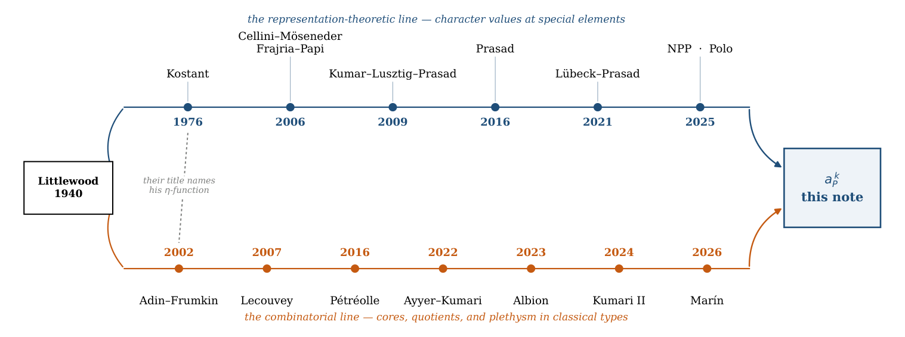
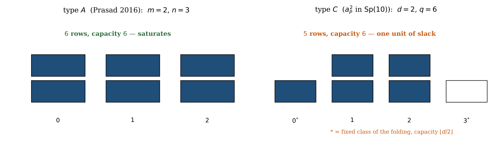
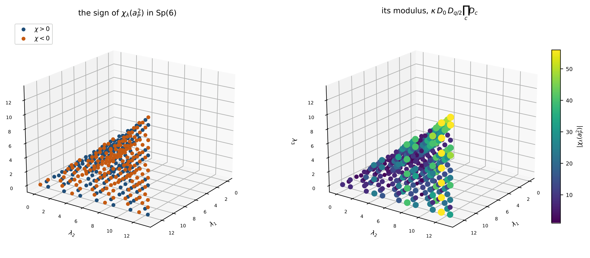
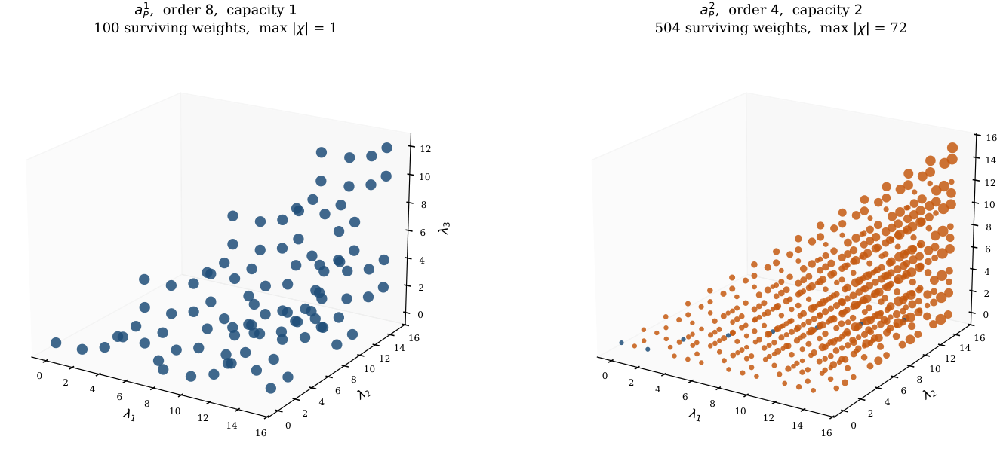
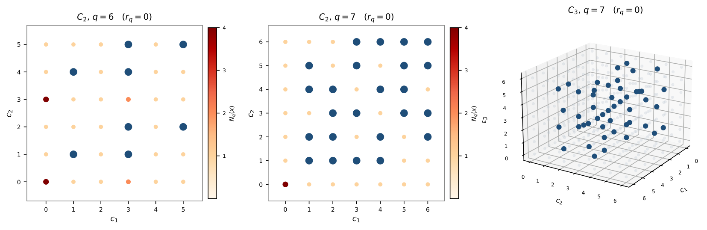
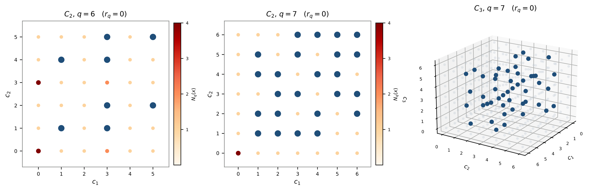

Integer character values on the ρ-line of Sp(2m)
At a glance
What the paper contributes
Kostant's element aP of Sp(2m) is one point of the line θ ↦ gθ = exp(2πiθρ♯), and at it every character is 0 or ±1. The paper studies the rest of the line, and above all the powers aPk, where ρ lies on root walls and the alcove argument no longer applies.
- A classification (Theorem 5.1): every character of Sp(2m) is an integer at g1/q exactly for q | 2m, q | 2m+1, q | 2m+2, and q = 6 with m ≡ 1 (mod 3); the powers of aP are the family q | 2m+2.
- A vanishing criterion at every rational point (Theorem 3.1): χλ(gp/q) ≠ 0 iff Nq(λ+ρ) = Nq(ρ); in type C, capacities of folded residue classes, with one unit of slack when d is even (Corollary 6.1, Proposition 6.2).
- The value at every power, sign included (Theorem 7.1): (−1)Ep,q(λ) Zq(λ+ρ)/Zq(ρ), through a residue lemma that needs no pairing of roots (Proposition 9.1); its modulus is κ ∈ {1, 2} times dimensions of GLn, Sp2n and SO2n+1, one per folded class (Theorem 10.1); a closed count of the survivors for every q (Theorem 11.1); G2 at q = 3 (Corollary 12.1).
What the paper says is not new. At aP itself the criterion and the sign are Corollary 3.2 of Cellini–Möseneder Frajria–Papi; read on coroots the count is Corollary 3.7 of Nadimpalli–Pattanayak–Prasad, the same count root by root when gcd(q, r) = 1; the principal specialisation is classical; at q = 2 the factorisation into dimensions has the two-block form of Theorem 5.1 of Karmakar, and in G2 the case q = 2 is his Proposition 2; the necessity in Theorem 5.1 also follows from Gannon–Schopieray, Lemma 4.6.
What is in Lean, and what is not (the paper's section «Formalization», version 2). In Lean 4 with Mathlib (commit 6283de8): the type-Cm statements on the root products Fx and their quotient Q, including that Fρ divides Fℓ, the spectral classification behind Theorem 5.1, and the rest of that list; each statement below shows its declarations and their scope. Outside Lean: the identification of Q(ζ) with the character (Weyl's formula), the equivalence between spectral and character integrality, that the ν(c) are partitions, and the step from a dominant λ to ℓ.
🚀 Start here: Theorem 3.1: the zero-count criterion: χ_λ(g_(p/q)) ≠ 0 iff Nq(λ+ρ) = Nq(ρ), at every rational point of the ρ-line.
Main results:
- Theorem 3.1: the zero-count criterion: χ_λ(g_(p/q)) ≠ 0 iff Nq(λ+ρ) = Nq(ρ), at every rational point of the ρ-line
- Theorem 5.1: every character is an integer at g_(1/q) exactly for q | 2m, q | 2m+1, q | 2m+2, or q = 6 with m ≡ 1 (mod 3)
- Theorem 7.1: the value at every power, sign included: χ_λ(a_Pᵏ) = (−1)^(E_(p,q)(λ)) Zq(λ+ρ)/Zq(ρ) on the survivors, 0 elsewhere
- Theorem 10.1: the modulus factors as κ ∈ 1, 2 times dimensions of GLₙ, Sp₂n and SO₂n+1 representations, one per folded class
🗺️ Map of the results (click a box to go to it)
Dependencies in the written proof: an arrow A → B means that this proof of B uses A. Every result rests on its written proof; the tags record what was checked besides, and each statement's “Evidence & scope” block says how far. The colour of a box is its strongest tag, in the order above; the tags in the box give the rest. Boxes with a thick border are the main results; click a box to read the statement.
📐 Setting (copied from the paper, §2)
Let \(G\) be simple and simply connected with maximal torus \(T\), roots \(\Phi \), positive roots \(\Phi ^+\), and \(\rho \) the half-sum of \(\Phi ^+\). Normalise the invariant form so that short roots have \((\alpha ,\alpha )=2\), and write \(\rho ^\sharp \) for the vector of \(\mathfrak t\) that the form identifies with \(\rho \). For a real parameter \(\theta \) put
so that a weight \(\mu \) takes the value \(e^{2\pi i\theta (\mu ,\rho )}\) on \(g_\theta \). Throughout, \(\theta =p/q\) in lowest terms, and \(q\) is the denominator of the parameter, which is the integer every count below is taken modulo. In \(\mathrm{Sp}(2m)\) we have \(\rho =(m,m-1,\dots ,1)\) in the standard coordinates, the subgroup \(\theta \mapsto g_\theta \) has eigenvalues \(e^{\pm 2\pi i\theta j}\), and with
Kostant’s second element is \(a_P=g_{1/t}=\rho (\zeta _t)\), and
(§7) Write, for a vector \(x\) and the positive roots of type \(C\),
Abstract.
Where this comes from. In his book of 1940 Littlewood recorded that a Schur polynomial evaluated at a full set of roots of unity either vanishes or factors, and that which of the two happens is decided by a purely combinatorial datum of the indexing partition; Ayyer and Kumari [ 4 , § 1 ] trace it to his work with Richardson of 1934. Two traditions grew out of that observation and have run alongside each other ever since without quite meeting. On one side, representation theory asks for the value of a character at a distinguished element of the group: Kostant’s 1976 paper singles out two such elements, \(a_Q\) and \(a_P\), and proves that at either of them every character is \(0\) or \(\pm 1\). On the other, combinatorics asks the same question of symmetric functions specialised at roots of unity, and answers it with cores and quotients of partitions. The first line runs Kostant, Cellini–Möseneder Frajria–Papi, Kumar–Lusztig–Prasad, Prasad, Lübeck–Prasad, Nadimpalli–Pattanayak–Prasad; the second runs Adin–Frumkin, Lecouvey, Pétréolle, Ayyer–Kumari, Albion, Kumari. Figure 1 draws both.
And where it goes. At \(a_P\) itself the question is settled, and settled on both lines. This note is about the rest of the line. The step away from \(a_P\) is not cosmetic: there the half-sum \(\rho \) is a regular point of the relevant arrangement, and the argument that settles the character is an argument about alcoves that needs exactly that regularity. At the powers of lower order, \(a_P^{\, k}\) with \(\gcd (k,2m+2){\gt}1\), \(\rho \) moves onto the walls, the alcove argument degenerates, and the values — which were \(0\) and \(\pm 1\) — run to \(72\) one power later in a group of rank three. Further out it is regular again: no positive root of \(C_m\) takes a value above \(2\rho _1=2m\), so no \(q{\gt}2m\) divides one, and the line has three regimes rather than two. What replaces the alcove argument, which points of the line still admit an answer at all, and what that answer looks like, is the content below.
Three things are proved. The first is a classification: of all the rational points \(g_{1/q}\) of the line, exactly four families have the property that every character of \({\mathrm{Sp}}(2m)\) takes an integer value there, namely \(q\mid 2m\), \(q\mid 2m+1\), \(q\mid 2m+2\), and a sporadic \(q=6\) with \(m\equiv 1\pmod3\) (Theorem 5.1); the argument is that integrality forces the characteristic polynomial of the natural representation into \({\mathbb {Z}}[X]\), so the spectrum must be stable under the Galois group; classifying the stable spectra is then elementary. The necessity also follows from the field computation of Gannon and Schopieray [ 7 ] . The powers of \(a_P\) are the family \(q\mid 2m+2\), and they are no longer the boundary of what can be said but one case of a list.
The second is a vanishing criterion: writing \(\ell =\lambda +\rho \) and \(N_q(x)\) for the number of positive roots \(\alpha \) with \(q\mid (x,\alpha )\), the character survives exactly when \(N_q(\ell )=r_q:=N_q(\rho )\). At \(a_P\) itself that statement is not new, and not new on this very line: it is Corollary 3.2 of Cellini–Möseneder Frajria–Papi [ 6 ] , in every type, together with the sign; in the coroot statistic it is Corollary 3.7 of Nadimpalli–Pattanayak–Prasad [ 19 ] , for every positive integer. What is left, and what this note is about, is the powers: at \(a_P^{\, k}\) with \(\gcd (k,2m+2){\gt}1\) the half-sum \(\rho \) is no longer regular — it lies on \(r_q\) walls — and the alcove argument that settles \(a_P\) degenerates exactly there. §3 sets the three side by side.
The third is the value itself, in type \(C\) and at the powers of \(a_P\) (the denominators \(q\mid 2m+2\)), and there it is now complete. For every power,
on the surviving weights and \(0\) elsewhere (Theorem 7.1), with \(Z_q\) a product of root statistics and \(E_{p,q}\) a sum of floors — equivalently a count of three indicators on the residues of \(\ell \) taken in order; and that modulus factors as \(\kappa (\lambda )\in \{ 1,2\} \) times a product of dimensions of irreducible representations of \(GL_n\), \(Sp_{2n}\) and \(SO_{2n+1}\), one per folded class (Theorem 10.1) — the three types Lecouvey [ 10 ] already reads off the folded classes of the full alphabet, here surviving the deletion of the two letters. A closed count of the surviving weights follows for every \(q\) (Theorem 11.1), and \(G_2\) is done in closed form at \(q=3\) (§12). Nothing above rests on a measurement: the one step that did, the triviality of the non-vanishing factor, is Proposition 9.1. What is left open is stated in §15, and it is no longer the value at the powers of \(a_P\); at the other three families of Theorem 5.1 the value needs a corrector, which is measured but not proved. In Lean 4 with Mathlib, with the scope given under Formalization: the type-\(C_m\) statements on the root products \(F_x\) and their quotient \(Q\), the spectral classification of Theorem 5.1, and the rest of that list. Outside it: the identification with the character (Weyl’s formula), the equivalence of §5 between spectral and character integrality, that the \(\nu ^{(c)}\) are partitions, and the step from dominant \(\lambda \) to \(\ell \).
Companion site. https://karlesmarin.github.io/blueprints/characters-at-aP/: every statement with its dependencies and checks, and two labs in the browser.
2020 Mathematics Subject Classification. Primary 20G05; Secondary 05E05, 05E10, 05A15, 17B22, 11R18.
Key words and phrases. Weyl character formula; classical groups; characters at elements of finite order; Kostant’s element \(a_P\); roots of unity; integrality; vanishing criterion; factorisation into dimensions; symplectic group.
In words, before any notation. A character of a compact group, evaluated at one element of it, is a single number. This note answers two questions about that number: when is it zero, and what is it when it is not.
The first answer is a count. Write \(\ell =\lambda +\rho \), fix the denominator \(q\), count the positive roots \(\alpha \) for which \((\ell ,\alpha )\) is divisible by \(q\), and compare with the same count on \(\rho \). The count can never come out below; the character is non-zero exactly when it comes out equal.
What is new here and what is not. At \(a_P\) itself, nothing. The count and the sign there are Corollary 3.2 of [ 6 ] , in every type and on this line; read on coroots the count is Corollary 3.7 of [ 19 ] , and when \(q\) is prime to the ratio \(r\) of the squared root lengths — every odd \(q\) in type \(C\) — it is the same count, root by root; the principal specialisation the argument runs on is classical; at \(q=2\) the factorisation into dimensions has the two-block form of Theorem 5.1 of [ 8 ] ; and in \(G_2\) the case \(q=2\) is Proposition 2 of [ 8 ] . What is done here is the powers: to identify the alphabet of \(a_P^{\, k}\) with the alphabet of Theorem 2 of [ 23 ] folded and short of two letters — which turns out to be the condition, and not merely a description; to carry the count to the powers of lower order, where \(\rho \) is no longer regular, and read it on the character of the \(\rho \)-line through (2); and, in type \(C\) and at the powers of \(a_P\), to evaluate the character exactly — sign included — to factor it into dimensions at \(q\ge 3\), and to count the survivors in closed form. The necessity in the classification of §5 also follows from Gannon–Schopieray [ 7 ] , Lemma 4.6. What is in Lean 4 and what is left outside is stated under Formalization. The table on p. ?? says which is which, line by line.
1 Where this sits
Two literatures have been circling this object for eighty years without quite meeting, and it is worth one page to say which is which, because the gap is the reason the statements below had not been made together.
Read the upper line of Figure 1 from left to right and the object never changes: an element, and what its centraliser does to a character. Kostant [ 13 ] fixes the two elements in 1976 and proves that the values are \(0\) and \(\pm 1\). Kumar–Lusztig–Prasad [ 14 ] make twisted and folded the same word in 2009. Prasad’s two papers of 2016 supply first the geometry of \(\rho \) and the Coxeter element [ 22 ] , and then — this is the theorem the alphabet of §4 is folded against — the residue criterion on \({\mathrm{GL}}_n\) [ 23 ] . Lübeck–Prasad [ 16 ] carry it to the symmetric and hyperoctahedral groups, and the line arrives in 2025 at [ 19 ] and [ 21 ] .
Read the lower line and the object is a partition and its cores. It starts earlier — Littlewood [ 15 ] , 1940, and before the book his work with Richardson of 1934, to which Ayyer–Kumari [ 4 , § 1 ] trace it — and has been running alongside ever since: Adin–Frumkin [ 1 ] in 2002, Pétréolle [ 20 ] and Wahiche [ 24 ] on the Macdonald identity of type \(\widetilde C\), Ayyer–Kumari [ 3 ] and Albion [ 2 ] on characters twisted by roots of unity, Kumari [ 9 ] again in 2024. My own two papers [ 17 , 18 ] are on that side.
🖼️ Figure 1

The two lines. The axis is time and each node carries a name and its year of publication, the dates being those of the bibliography below. Above, character values at special elements: Kostant [ 13 ] fixes \(a_Q\) and \(a_P\) and proves the values are \(\{ 0,\pm 1\} \); Cellini–Möseneder Frajria–Papi [ 6 ] evaluate the character at \(a_P\) outright; Kumar–Lusztig–Prasad [ 14 ] make twisted and folded the same word; Prasad [ 22 , 23 ] supplies the geometry of \(\rho \) and the residue criterion on \({\mathrm{GL}}_n\); Lübeck–Prasad [ 16 ] carry it to \(S_{2n}\) and \(B_n\); and NPP [ 19 ] and Polo [ 21 ] arrive in 2025. Below, the combinatorial side: cores in type \(A\) [ 1 ] ; the \(\ell \)-quotient in classical types through plethysm [ 10 , 11 ] ; the Macdonald identity of type \(\widetilde C\) [ 20 ] ; and characters twisted by roots of unity [ 3 , 2 , 9 ] . Littlewood 1940 sits outside both because it feeds both, and the box on the right is this note: the two arrows into it are the two things it needs, the element from above and the alphabet from below. The node to read first is 2006. Corollary 3.2 of [ 6 ] is already the vanishing criterion and the sign, in every type, and on the root statistic — this line, not the coroot line. Everything this note has to add begins one step further along: at the powers \(a_P^{\, k}\) with \(\gcd (k,2m+2){\gt}1\), where \(\rho \) stops being regular. In the coroot statistic the criterion is Corollary 3.7 of [ 19 ] , for every integer. The dotted edge is the crossing of 2002: Adin–Frumkin’s title is Rim hook tableaux and Kostant’s \(\eta \)-function coefficients, a combinatorial paper taking its coefficients from the 1976 paper where both of Kostant’s elements are defined. The two lines do see each other, and it is worth being exact about how much: [ 19 ] cites Ayyer–Kumari; Kumari’s papers are motivated by a conjecture of Wagh and Prasad; and Ayyer–Kumari [ 3 ] open by saying that Littlewood and Prasad considered their factorisations “motivated by a celebrated result of Kostant”. So the connection Prasad–Kostant is on the record on both sides. What is not on either side is the identification of §4: \(a_P^{\, k}\) as \(d\cdot \mu _q\) less two letters, read on the line of \(\rho \). 0 azul[figs.py]
2 Normalisations, and which element this is
The whole note turns on one axis — roots against coroots — so the normalisations are fixed first, and with more care than the object seems to need.
Let \(G\) be simple and simply connected with maximal torus \(T\), roots \(\Phi \), positive roots \(\Phi ^+\), and \(\rho \) the half-sum of \(\Phi ^+\). Normalise the invariant form so that short roots have \((\alpha ,\alpha )=2\), and write \(\rho ^\sharp \) for the vector of \(\mathfrak t\) that the form identifies with \(\rho \). For a real parameter \(\theta \) put
so that a weight \(\mu \) takes the value \(e^{2\pi i\theta (\mu ,\rho )}\) on \(g_\theta \). Throughout, \(\theta =p/q\) in lowest terms, and \(q\) is the denominator of the parameter, which is the integer every count below is taken modulo.
\(q\) need not be the order of \(g_\theta \), and \(\rho ^\sharp \) need not be a cocharacter. In \(A_1\) with \((\alpha ,\alpha )=2\) one has \(\rho =\omega \) and \((\omega ,\rho )=\tfrac 12\), so the standard representation would take the values \(z^{\pm 1/2}\): the map \(z\mapsto \rho (z)\) is a cocharacter of the adjoint group, not of \(SL_2\). Concretely \(g_{1/q}=\operatorname {diag}(e^{\pi i/q},e^{-\pi i/q})\) has order \(2q\) in \(SL_2\), not \(q\). Nothing below is affected — every statement is about the denominator \(q\) — but the two must not be confused: for \(\operatorname {diag}(i,-i)\), of order \(4\), the standard character vanishes, and a count run with \(q=4\) in this normalisation does not see it.
In type \(C\), which is where everything after §6 takes place, no such care is needed. In \({\mathrm{Sp}}(2m)\) we have \(\rho =(m,m-1,\dots ,1)\) in the standard coordinates, the subgroup \(\theta \mapsto g_\theta \) has eigenvalues \(e^{\pm 2\pi i\theta j}\), and with
Kostant’s second element is \(a_P=g_{1/t}=\rho (\zeta _t)\), and
so that evaluating (2) at \(\xi _q\) computes \(\chi _\lambda (a_P^{\, k})\): that is the whole bridge, and it is the one place where the parameter and the element are tied together. The relation \(q\mid 2m+2\) belongs to type \(C\) and to the powers of \(a_P\); it is not part of any general statement below. Checked on the \(140\) pairs with \(2\le m\le 11\), \(1\le k\le 14\): the spectrum of \(g_{p/q}\) is the alphabet of Proposition 4.1 and \(\zeta _t^{\, k}\) has order exactly \(q\). 0 azul[revision_52_bisagra.py]
3 The criterion, and what of it is already in print
The identity
The classical principal specialisation is usually written on the line of \(\rho ^\vee \), with the coroot statistic \(\langle \lambda +\rho ,\alpha ^\vee \rangle \). Written on the line of \(\rho \) it reads
with the root statistic. It needs no faith: with \(\ell =\lambda +\rho \), \(\sum _w\epsilon (w)z^{(w\ell ,\rho )}=\sum _w\epsilon (w)z^{(w\rho ,\ell )}\) since \((w\ell ,\rho )=(\ell ,w^{-1}\rho )\) and \(\epsilon (w)=\epsilon (w^{-1})\); the Weyl denominator identity turns the right-hand side into \(z^{(\rho ,\ell )}\prod _{\alpha {\gt}0}(1-z^{-(\ell ,\alpha )})\); and dividing by the same computation at \(\ell =\rho \) gives (2). All that has changed from the usual form is which of the two lines one stands on — which is precisely the axis that separates Kostant’s two elements. Checked against the bialternant on the \(\rho \)-line for \(m=2,3,4\), exactly, as an identity of Laurent polynomials on \(85\) weights (certificate C1); with the coroot statistic in its place the identity holds only at \(\lambda =0\), \(3\) of \(85\). That is a finite check of (2) on those weights; the general statement is the derivation above. 0 azul[revision_47_verificacion.py, certificar_exacto.py]
The count
Let \(\lambda \) be dominant, \(\ell =\lambda +\rho \), \(\theta =p/q\) in lowest terms, and put
Then \(N_q(\ell )\ge r_q\) for every \(\lambda \), and
Lean · ours, in partshow
In the paper (Formalization, Lean 4 + Mathlib, commit 6283de8): in type C_m, for the products F_x(X) = ∏_{α>0}(1 − X^{(x,α)}), Lean proves that F_ρ divides F_ℓ (dvd_rho_ring over any commutative ring, dvd_rho over fields of characteristic zero), so the quotient Q with F_ρ·Q = F_ℓ is a polynomial and no divisibility is assumed; and the criterion for Q(ζ) at every q, for the positive pairings of type C_m (thm_crit, thm_crit′), with N_q(ρ) ≤ N_q(ℓ) (Nq_rho_le, N_rho_le). Not formalized: the identification χ_λ(g_{p/q}) = ζ^{−(λ,ρ)}Q(ζ) from Weyl’s formula (§3; checked exactly on 85 weights, certificate C1); the step from a dominant λ to ℓ = λ+ρ (Lean takes ℓ as a list of m integers with positive pairings); and the theorem outside type C_m, where it is printed but not formalized.
✅ Checked when this page was built: RhoLine.lean, RhoLineDvd.lean compiles with Lean 4.35.0, no errors, no sorry. Axioms — thm_crit, eval_quot, Nq_rho_le, N_rho_le, Fl_cyclo, dvd_rho_ring, dvd_rho, thm_crit': propext, Classical.choice, Quot.sound.
Reproduce: Lean 4.35.0, Mathlib f0b4c8150aa0; in that Lean project, lake env lean RhoLine.lean RhoLineDvd.lean (SHA-256 of the compiled file: 075496082bfdef75…; a source page on this site may show it with comments edited, under its own hash).
Trust base: 🔒 kernel only — only part of the statement is formal (see the box). Lean: 8 results, standard axioms only
Proof: in this note·Formalized: Lean 4, by the author (public formalizations repository)·Covers: part: In the paper (Formalization, Lean 4 + Mathlib, commit 6283de8): in type C_m, for the products F_x(X) = ∏_{α>0}(1 − X^{(x,α)}), Lean proves that F_ρ divides F_ℓ (dvd_rho_ring over any commutative ring, dvd_rho over fields of characteristic zero), so the quotient Q with F_ρ·Q = F_ℓ is a polynomial and no divisibility is assumed; and the criterion for Q(ζ) at every q, for the positive pairings of type C_m (thm_crit, thm_crit′), with N_q(ρ) ≤ N_q(ℓ) (Nq_rho_le, N_rho_le). Not formalized: the identification χ_λ(g_{p/q}) = ζ^{−(λ,ρ)}Q(ζ) from Weyl’s formula (§3; checked exactly on 85 weights, certificate C1); the step from a dominant λ to ℓ = λ+ρ (Lean takes ℓ as a list of m integers with positive pairings); and the theorem outside type C_m, where it is printed but not formalized.·Cite: Theorem 3.1, p. 5, doi:10.5281/zenodo.24073781
🆕 Classical and new: at a_P itself the criterion and the sign are Corollary 3.2 of [CMP06]; the coroot form is Corollary 3.7 of [NPP25], and so the root form whenever gcd(q, r) = 1 (Observation 13.1); the paper claims the same count on the whole ρ-line, at the powers, where ρ is no longer regular, read on the character of the ρ-line through (2) (Attribution table).
↳ Used in: Corollary 6.1, Theorem 7.1, Theorem 8.3, Corollary 12.1
Each factor \(1-z^{r}\) of (2) has a simple zero at a primitive \(q\)-th root of unity exactly when \(q\mid r\), so at \(z=e^{2\pi ip/q}\) the numerator vanishes to order \(N_q(\ell )\) and the denominator to order \(r_q\). A character has no poles, so the first order is at least the second; and the limit is non-zero exactly when they agree.
Take a dominant weight \(\lambda \) and a rational point \(g_{p/q}\) of the line through \(\rho \). Count the positive roots \(\alpha \) for which \(q\) divides \((\lambda +\rho ,\alpha )\), and the same count for \(\rho \) alone. The first count is never smaller than the second, and the character is non-zero exactly when they are equal. So whether \(\chi _\lambda (g_{p/q})\) vanishes is decided by divisibility of a few integers, without computing the character. At \(a_P\) itself this is Corollary 3.2 of Cellini–Möseneder Frajria–Papi; what is new is the rest of the line, in particular the powers of \(a_P\), where \(\rho \) lies on walls and the alcove argument no longer applies.
🛡️ Evidence & scope
Program: 27 183 dominant weights of Sp(2m), m = 2..6, q = 2..14 (19 986 with q ∤ 2m+2), no exception; the naive decoy «some root divides» fails 7 968 times. rho_line_any_q.py
Program: the product formula (2) against the bialternant on the ρ-line, EXACTLY as an identity of Laurent polynomials: 85 of 85 weights, m = 2, 3, 4; the coroot statistic in its place fails on 82 (it was checked to 1e-12 in version 1). certificar_exacto.py, revision_47_verificacion.py
Nothing in that proof uses \(q\mid 2m+2\), or type \(C\), or that \(p=1\): the statement is about the whole line \(\theta \mapsto g_\theta \), at every rational parameter. The powers of \(a_P\) in \({\mathrm{Sp}}(2m)\) are the sub-family \(q\mid 2m+2\). Measured on \(\mathbf{27\, 183}\) dominant weights in \({\mathrm{Sp}}(2m)\), \(m=2,\dots ,6\) and \(q=2,\dots ,14\), no exception — and \(\mathbf{19\, 986}\) of them have \(q\nmid t\). The naive condition “some root divides”, run as a decoy over the same weights, fails \(7\, 968\) times, so the test discriminates; no value was numerically ambiguous. 0 azul[rho_line_any_q.py]
What is already in print, and what is not
The same count, on the other line, is Corollary 3.7 of [ 19 ] , and it must be read before the above is read as new. In their notation, for every positive integer \(m\) and every dominant \(\lambda \):
and \(\Theta _\lambda (\rho ^\vee (e^{2\pi i/m}))\neq 0\) if and only if that inequality is an equality. Their Proposition 3.8 then reads the two sides as dimensions of centralisers in the dual group, and credits the minimality to Serre.
So the difference is the statistic, and therefore the element. Theorem 3.1 is the count on \((\, \cdot \, ,\alpha )\) — the line of \(\rho \), where \(a_P\) lives — and theirs is the count on \(\langle \, \cdot \, ,\alpha ^\vee \rangle \) — the line of \(\rho ^\vee \), where the Coxeter element lives. The two counts coincide well beyond the simply-laced types. Let \(r\) be the ratio of the squared lengths of long and short roots. Under the normalisation of §2, \((x,\alpha )=d_\alpha \langle x,\alpha ^\vee \rangle \) with \(d_\alpha \in \{ 1,r\} \), so when \(\gcd (q,r)=1\) the roots with \(q\mid (x,\alpha )\) and those with \(q\mid \langle x,\alpha ^\vee \rangle \) are the same roots, both for \(x=\rho \) and for \(x=\lambda +\rho \) (Observation 13.1). That covers the simply-laced types and, in type \(C\), every odd \(q\), prime powers included; there the count of Theorem 3.1 is theirs, and what this note adds is its reading on the character of the \(\rho \)-line, through (2). The two counts can part company only when \(\gcd (q,r){\gt}1\) — in type \(C\), at even \(q\), which includes \(a_P\) itself, since \(2m+2\) is even.
What is left, then, and what the rest of the note is: the identification of the alphabet (§4), the translation into capacities in type \(C\) (§6), the exact value with its sign (§7), the modulus and its lemma (§8), the factorisation into dimensions (§10), the count (§11) and \(G_2\) (§12).
4 Why the two tables look alike: the alphabet
Two tables written in two literatures that seldom cite each other — Figure 1 records where they do — have the same shape. Is that a resemblance, or are they about the same object?
They look alike because the alphabets are the same object. This is the one place where I can replace the resemblance by an identity, and it is elementary.
Let \(t=2m+2\), \(d=\gcd (k,t)\) and \(q=t/d\). As a multiset, the symplectic alphabet of \(a_P^k\), that is \(A=\{ \zeta ^{\pm jk}: j=1,\dots ,m\} \) with \(\zeta \) of order \(t\), satisfies
Lean · oursshow
In the paper (Formalization, Lean 4 + Mathlib, commit 6283de8): complete, as an identity of multisets, over an arbitrary field with a primitive (2m+2)-th root of unity (KostantAlphabet).
✅ Checked when this page was built: KostantAlphabet.lean compiles with Lean 4.35.0, no errors, no sorry. Axioms — alphabet_eq_even, alphabet_eq_odd, alphabet_add_even, alphabet_add_odd: propext, Classical.choice, Quot.sound.
Reproduce: Lean 4.35.0, Mathlib f0b4c8150aa0; in that Lean project, lake env lean KostantAlphabet.lean (SHA-256 of the compiled file: 42f459f277adaa71…; a source page on this site may show it with comments edited, under its own hash).
Trust base: 🔒 kernel only. Lean: 4 results, standard axioms only
Proof: in this note·Formalized: Lean 4, by the author (public formalizations repository)·Covers: the whole statement·Cite: Proposition 4.1, p. 6, doi:10.5281/zenodo.24073781
🆕 Classical and new: the two deleted alphabets are marked «this note» in the Attribution table; for d odd at q = 4 it is (c−1)μ_4 + {i, −i}, Theorem 2.8 of [Kum24] at y = i; the full alphabet d·μ_q is Littlewood, Prasad [Prasad16b, Thm 2], Ayyer–Kumari, Albion and Lecouvey.
↳ Used in: Theorem 7.1
Since \(t=2m+2\), the exponents \(\{ \pm j : j=1,\dots ,m\} \) are exactly \({\mathbb {Z}}/t\smallsetminus \{ 0,t/2\} \). The map \(e\mapsto \zeta ^{ke}\) factors through \({\mathbb {Z}}/q\), because \(\zeta ^k\) has order \(q\), and every residue mod \(q\) is the image of exactly \(d\) elements of \({\mathbb {Z}}/t\); hence \(\{ \zeta ^{ke}: e\in {\mathbb {Z}}/t\} =d\cdot \mu _q\). It remains to delete the two excluded exponents. For \(e=0\) the element is \(1\). For \(e=t/2=dq/2\): if \(d\) is even this is \(\equiv 0 \pmod q\) and the element is again \(1\); if \(d\) is odd then \(q\) is even, since \(dq=t\) is, and \(dq/2\equiv q/2\), so the element is \(-1\).
🛡️ Evidence & scope
Program: the generating function H(z) against the alphabet computed directly; the parity of d reversed agrees in 0 of 72 cases. aP_alfabeto.py
Program: spectrum of g_p/q = the alphabet, and ζ_t^k of order exactly q, on 140 pairs 2 ≤ m ≤ 11, 1 ≤ k ≤ 14. revision_52_bisagra.py
Before the consequences, an attribution that belongs here. The undeleted alphabet \(d\cdot \mu _q\) is not virgin ground on my side of the map either: Ayyer and Kumari [ 3 ] treat exactly the symplectic character of \({\mathrm{Sp}}_{2t'n}\) at \(\omega ^j x_i\) — \(t'\) being their order of \(\omega \), and \(n\) their number of variables — which at \(x_i=1\) is \(\mu _{t'}\) with multiplicity \(2n\), counting each eigenvalue with its reciprocal. They give both a vanishing criterion and a factorisation into characters of smaller classical groups. Their multiplicity is therefore always even, and nothing is deleted. So the big alphabet is done on both sides of the map; what is not done is the two points.
Some members of the deleted family are nevertheless specialisations of cited results. For \(q=4\) and \(d=2n+1\) the alphabet is \((2n+1)\, \mu _4-\{ 1\} -\{ -1\} =2n\, \mu _4+\{ i,-i\} \), which is the alphabet of Theorem 2.8 of Kumari [ 9 ] at \(t=4\), \(x_j=1\), \(y=i\); and at \(q=2\) the element has order two and falls under Karmakar [ 8 ] . What the uniform statement adds is the two deletions for every \(d\) and \(q\) at once, and, in §10, the formula by folded classes. 0 azul[comprobar_v253.py]
Two consequences, and the first is the dictionary.
The alphabet in Theorem 2 of [ 23 ] at \(t=1\) — the \(t\) of that paper, the element of \({\mathrm{GL}}_m\), not the \(t=2m+2\) of this note — is \(\mu _n\) with multiplicity \(m\). The one here is \(\mu _q\) with multiplicity \(d\), minus two points. So the \(m\) there is the \(d\) here and the \(n\) there is the \(q\) here — not by analogy but because the multisets are the same one — and the two missing points are fixed points of \(w\mapsto w^{-1}\) — one copy of each of the two when \(d\) is odd, two copies of the single one \(w=1\) when \(d\) is even.
That is the content of Proposition 4.1, and it says exactly where the difference between the two settings comes from: the difference between the two criteria is the difference between the two alphabets, which is two points. Computing the effect of removing them is a deletion problem — a symplectic branching literally only when \(d\) is even, for the reason set out in the second box below — and I did not manage it — but it turned out not to be needed for the vanishing, which Corollary 6.1 settles by another route. It is still the natural way in for the value, and comes back to it.
The second consequence is the generating function, which is what makes everything computable:
so the \(h_n\) are integers — supported on the residues \(0,1,2\) mod \(q\) when \(d\) is even and on \(0,2\) when \(d\) is odd — and every determinant in this note is exact. Both statements checked against the alphabet computed directly, and the version with the parity of \(d\) reversed agrees in \(0\) of \(72\) cases. 0 azul[aP_alfabeto.py]
What the deletion is, geometrically, depends on the parity of \(d\), and it took a wrong version of this paragraph to see why.
Unconditionally: the element of \({\mathrm{GL}}_t\) of [ 23 ] has alphabet \(d\cdot \mu _q\), and the alphabet of \(a_P^{\, k}\) in \({\mathrm{Sp}}(t-2)\) is that with exactly two letters deleted — for \(d\) even, two copies of the fixed point \(1\); for \(d\) odd, one copy of each of the two fixed points \(1\) and \(-1\).
Only for \(d\) even can that be read as removing a symplectic plane. For \(d\) odd it cannot: then \(q\) is even, the eigenvalues \(1\) and \(-1\) each occur in \(d\cdot \mu _q\) with multiplicity \(d\), which is odd, and \(\det (d\cdot \mu _q)=(-1)^{d}=-1\), so no element of \({\mathrm{Sp}}(t)\) has that spectrum; nor is \(\{ 1,-1\} \), of determinant \(-1\), a symplectic plane. The smallest case is \(d=1\), \(q=6\): the product over \(\mu _6\) is \(-1\), so \(\mu _6\) is not a spectrum in \({\mathrm{Sp}}(6)\) — while \(\mu _6\smallsetminus \{ 1,-1\} \) is one in \({\mathrm{Sp}}(4)\).
So the two sides are joined by an identity of alphabets, not always by an identity of elements, and \(d\) odd — which includes \(a_P\) itself — is precisely where the geometric picture fails. That also removes the easy explanation of the capacities: they cannot simply be blamed on “the two fixed points”, since for \(d\) even only one fixed point is involved, twice.
What that leaves is no longer vague. The deletion of the two letters acts on the generating function by a single factor, so at the level of the \(h_n\) it is a finite difference:
where \(h'_n=\mathbf{1}_{q\mid n}\binom {n/q+d-1}{d-1}\) are those of [ 23 ] — the indicator matters, since \(h'_n=0\) unless \(q\mid n\) — and \(S\) is the shift. So the gap between this note and a derivation is exactly one question: what does a second difference of the \(h\)-sequence do to the Jacobi–Trudi determinant? I took it for an obstruction, and it is not one: it comes out as a product of one-variable operators, in two lines, and does it. What that still leaves — the cancellation among the shifted determinants — is where this note stops.
5 Which points of the line have whole answers
Proposition 4.1 read the alphabet of \(a_P^{\, k}\) as a whole multiple of \(\mu _q\) short of two letters. Every point of the line has an alphabet, and for most of them it is not of that shape. What is special about the ones that are?
In general, with \(m=uq+v\), the alphabet is \(2u\cdot \mu _q\) with a segment \(\{ \pm 1,\dots ,\pm v\} \) added, and Proposition 4.1 is the case where that segment closes up. The right question is not which alphabets look tidy but which ones the arithmetic cannot tell apart from their own Galois conjugates — and that turns out to be a statement about the characters, not about the notation: whether they are whole numbers. The criterion of §3 holds at every rational point, so nothing so far has forced the family \(q\mid 2m+2\) that the rest of this note evaluates. This is what picks it out.
Let \(m\ge 2\) and \(\gcd (p,q)=1\). Then \(\chi _\lambda (g_{1/q})\in {\mathbb {Z}}\) for every dominant weight \(\lambda \) if and only if at least one of
holds; and in that case \(g_{p/q}\) is conjugate to \(g_{1/q}\) for every \(p\) coprime to \(q\), so no character value depends on the numerator.
Lean · ours, in partshow
In the paper (Formalization, Lean 4 + Mathlib, commit 6283de8): for q ≥ 2 and a primitive q-th root ζ, all elementary symmetric functions of the multiset {ζ^{±j} : 1 ≤ j ≤ m} are integers iff one of the four conditions of the theorem holds (Segmentos.thm_clasif_spectral, in IntegralPoints, with stable_iff_cond and esymm_int_iff_stable); lem_seg and seg_stable_of_dvd classify the stable segments for n ≥ 3 by Amiot’s lemma, another route than the Dirichlet kernels of the proof. Not formalized: the equivalence of §5 with the integrality of all characters of Sp(2m) (checked exactly on 455 characters, 44 pairs, certificate C2).
✅ Checked when this page was built: IntegralPoints.lean, Segments.lean compiles with Lean 4.35.0, no errors, no sorry. Axioms — lem_seg, seg_stable_of_dvd, stable_iff_cond, esymm_int_iff_stable, thm_clasif_spectral: propext, Classical.choice, Quot.sound.
Reproduce: Lean 4.35.0, Mathlib f0b4c8150aa0; in that Lean project, lake env lean IntegralPoints.lean Segments.lean (SHA-256 of the compiled file: cef7c131da3e7cfb…; a source page on this site may show it with comments edited, under its own hash).
Trust base: 🔒 kernel only — only part of the statement is formal (see the box). Lean: 5 results, standard axioms only
Proof: in this note·Formalized: Lean 4, by the author (public formalizations repository)·Covers: part: In the paper (Formalization, Lean 4 + Mathlib, commit 6283de8): for q ≥ 2 and a primitive q-th root ζ, all elementary symmetric functions of the multiset {ζ^{±j} : 1 ≤ j ≤ m} are integers iff one of the four conditions of the theorem holds (Segmentos.thm_clasif_spectral, in IntegralPoints, with stable_iff_cond and esymm_int_iff_stable); lem_seg and seg_stable_of_dvd classify the stable segments for n ≥ 3 by Amiot’s lemma, another route than the Dirichlet kernels of the proof. Not formalized: the equivalence of §5 with the integrality of all characters of Sp(2m) (checked exactly on 455 characters, 44 pairs, certificate C2).·Cite: Theorem 5.1, p. 8, doi:10.5281/zenodo.24073781
🆕 Classical and new: listed as done here: «which denominators of the ρ-line give integer values», with «criterion for Sp(2m) and elementary proof here; necessity also follows from [GS19], Lemma 4.6» (Attribution table).
↳ Not used by another result of the paper.
At most points of the line some characters take irrational values. The theorem lists the points where all characters of \(\mathrm{Sp}(2m)\) are integers at once: \(q\) divides \(2m\), \(2m+1\) or \(2m+2\), or \(q=6\) with \(m\equiv 1\pmod3\). The powers of \(a_P\) are the third family. The reason is short: if every character is an integer, so is the characteristic polynomial of the natural representation, and then its eigenvalues \(e^{\pm 2\pi i j/q}\), \(1\le j\le m\), must be permuted by the Galois group; which such spectra are stable is elementary. The lab below draws the four families in the plane \((m,q)\) and checks the list against the Galois test point by point.
🛡️ Evidence & scope
Program: divisibility condition against Galois stability of the spectrum on 11 800 pairs (q ≤ 60, m ≤ 200); against the characters themselves (40 digits) on 44 pairs (m ≤ 5, q ≤ 12). galois.py
Program: the same 44 pairs EXACTLY: 455 characters computed in ℤ[ζ_q] by exact Laurent division; «all integers» = Galois stability = the four families, 44 of 44; without the clause q = 6 the condition disagrees (m = 4, q = 6). certificar_exacto.py
Program: integrality is not the cancellation: over q ≤ 40, m ≤ 120 the 1119 points where the factor cancels lie in the list, which has 177 more. dos_clasif.py
🧪 Lab: where every character is an integer: the four families in the plane (m, q)
Choose the size of the box and one \(m\). The lab marks every point \((m,q)\) with \(q\ge 2\) at which all characters of \(\mathrm{Sp}(2m)\) are integers at \(g_{1/q}\), coloured by the family of Theorem 5.1 that puts it there: \(q\mid 2m\), \(q\mid 2m+1\), \(q\mid 2m+2\) (the powers of \(a_P\)), or the sporadic \(q=6\) with \(m\equiv 1\pmod3\); your \(m\) is the red column. Independently, it tests each point by the route of the proof, the Galois stability of the spectrum \(\{ \pm j \bmod q\} \) of the natural representation, and reports any disagreement. Control: dropping the sporadic family makes the two routes disagree at \((4,6)\), \((7,6)\), \((10,6)\), \((13,6)\).
The word every carries the statement. This is not a classification of when one character happens to come out whole — that happens all over the line — but of when all of them do at once.
Suppose every \(\chi _\lambda (g_{1/q})\) is an integer. The exterior powers \(\Lambda ^j\mathbb {C}^{2m}\) are direct sums of irreducibles — not irreducible themselves — so their characters are \({\mathbb {Z}}\)-combinations of the \(\chi _\lambda \) and are therefore integers as well; and those characters are the coefficients of the characteristic polynomial of \(g_{1/q}\) acting on \(\mathbb {C}^{2m}\); so that polynomial lies in \({\mathbb {Z}}[X]\), and the multiplicities of its roots are constant along Galois orbits. Conversely, if the spectrum is carried to itself by every \(\xi _q\mapsto \xi _q^{\, p}\), then \(g_{p/q}\) and \(g_{1/q}\) have the same spectrum and are conjugate in \({\mathrm{Sp}}(2m)\); the character values are then algebraic integers fixed by the Galois group of \(\mathbb {Q}(\xi _q)\), hence rational integers.
What is left is elementary. For \(q=1\) the element is the identity and every value is a dimension; let \(q\ge 2\). Write \(m=uq+v\) with \(0\le v{\lt}q\) and \(a=\lfloor (q-1)/2\rfloor \). The spectrum of the natural representation is \(\{ \xi _q^{\pm j}: j=1,\dots ,m\} \), which as a multiset of \(\mu _q\) is
and the first summand is Galois-stable on its own. So the question is when the segment \(\{ \pm 1,\dots ,\pm v\} \) is, and that is a question about residues and nothing else. Sufficiency is immediate for \(v=0\), \(v=a\), \(v=q-1\) and, when \(q\) is even, \(v=q/2\): each of those segments is carried to itself by every \(\xi _q\mapsto \xi _q^{\, p}\). For \(q=6\), the only units modulo \(6\) are \(\pm 1\), so the reciprocal spectrum is Galois-stable for every \(m\). Necessity is the step that has to be argued.
Write \(A_v=\sum _{j=1}^{v}(\xi _q^{\, j}+\xi _q^{-j})\). If the segment is stable then \(A_v\) is fixed by the whole group; only that direction is used, and it is used in the contrapositive. A full turn sums to zero, whence \(A_v+A_{q-1-v}=-2\) and \(\mathbb {Q}(A_v)=\mathbb {Q}(A_w)\) for \(w=\min (v,q-1-v)\); the four segments just listed are \(w=0\) and \(w=a\), so only \(1\le w{\lt}a\) is left. There set \(\beta _w=1+A_w=\sum _{j=-w}^{w}\xi _q^{\, j}\), a Dirichlet kernel, whose conjugates are
For \(q\ge 4\), \(2\le N\le q-2\) and \(1\le r\le q-1\) with \(r\neq 1,q-1\), one has the strict inequality
Indeed, replacing \(N\) by \(n=\min (N,q-N)\) changes no modulus; on \(0{\lt}x{\lt}\pi /n\) the function \(f(x)=\sin (nx)/\sin x\) is positive and strictly decreasing, since \(f'/f=n\cot (nx)-\cot x{\lt}0\) because \(t\cot t\) decreases on \((0,\pi )\); and on \(\pi /n\le x\le \pi /2\) one has \(|f(x)|\le 1/\sin (\pi /n){\lt}1/\sin (\pi /2n)=f(\pi /2n)\le f(\pi /q)\). Taking \(N=2w+1\), which lies in that range precisely when \(1\le w{\lt}a\), the only automorphisms fixing \(\beta _w\) are the identity and complex conjugation; so \(\mathbb {Q}(\beta _w)=\mathbb {Q}(\xi _q+\xi _q^{-1})\), which is \(\mathbb {Q}\) only when \(\varphi (q)=2\). Inside this range that leaves \(q=6\), \(w=1\) — the two segments \((q,v)=(6,1)\) and \((6,4)\). Translating the surviving residues into divisibilities gives the four conditions.
Prior art for the key step. Gannon and Schopieray [ 7 ] , Lemma 4.6 in the arXiv version, determine the field generated by \([r]_q=\sin (r\pi /q)/\sin (\pi /q)\) for \(0{\lt}r{\lt}q\). Their lemma gives another proof of necessity in Theorem 5.1. The case \(q=1\) gives the identity. For \(q\ge 2\), write \(2m+1=hq+r\), with \(0\le r{\lt}q\). Then \(1+\operatorname {tr}_{\mathrm{nat}}(g_{1/q})=[2m+1]_q=(-1)^h[r]_q\). The residues \(r=0,1,q-1\) give \(q\mid 2m+1\), \(q\mid 2m\), \(q\mid 2m+2\), respectively. For \(1{\lt}r{\lt}q-1\), the only rational case in the field formula is \(q=6\), \(r=3\), where \([3]_6=2\). This is exactly the additional case \(q=6\), \(m\equiv 1\pmod3\). We retain the elementary proof above to keep the argument self-contained. This reference was added in the second version.
Measured on \(\mathbf{11\, 800}\) pairs \((m,q)\) with \(q\le 60\) and \(m\le 200\): the divisibility condition and the Galois-stability of the spectrum agree without exception. And on the \(44\) pairs with \(m\le 5\), \(q\le 12\) the same agreement holds against the characters themselves — so the chain from the arithmetic to the values is checked at both joints. That second check was run twice: first in floating point, the characters computed to \(40\) digits as the limit of the sine form and tested for integrality (galois.py); and then exactly, as certificate C2: \(455\) characters (\(m=2,\dots ,5\), \(\lambda _1\le 5\)), each obtained as a Laurent polynomial by exact division and reduced in \({\mathbb {Z}}[\xi _q]\), are all integers exactly on the pairs of the four families, \(44\) of \(44\), while the condition without its clause \(q=6\) disagrees on one pair (certificar_exacto.py). Both are finite checks; the proof is the argument above. 0 azul[galois.py, certificar_exacto.py]
The powers of \(a_P\) are the third family. \(q\mid 2m+2\) is exactly the condition \(q\mid t\), so §7 onwards evaluates one of the four. The other three are points of the same line where every character is a whole number and \(a_P\) has nothing to do with it: in \({\mathrm{Sp}}(10)\) at \(q=5\), where \(5\mid m\), or in \({\mathrm{Sp}}(6)\) at \(q=7\), where \(7\mid 2m+1\) and every value is \(0\) or \(\pm 1\) although the order of \(a_P\) is \(8\).
And integrality is not the cancellation of §8. The two are easy to conflate and they are different. In \({\mathrm{Sp}}(4)\) at \(q=4\) — which is in the list, since \(4\mid 2m\) — take \(\lambda =(1,0)\). Then \(Z_4(\ell )/Z_4(\rho )=1\), while
Every character at that point is a whole number, and the non-vanishing factor has modulus \(2\), not \(1\). Over the \((m,q)\) with \(q\le 40\), \(m\le 120\), the points where the factor cancels are \(\mathbf{1119}\) and are contained in the list above; the list has \(\mathbf{177}\) more, and those are exactly the points where the value is whole but this note’s formula needs a corrector. 0 azul[dos_clasif.py]
6 Capacities in type \(C\)
The criterion counts roots. In the coordinates of type \(C\), what is it counting — and can one see at a glance whether a weight passes?
Theorem 3.1 is a statement about a root system. In the coordinates of type \(C\) it becomes a rule about buckets, and that translation is what makes everything after it computable.
The same thing in the coordinates of type \(C\). In \(C_m\) the positive roots are \(e_i-e_j\), \(e_i+e_j\) and \(2e_i\), so grouping the \(\ell _i\) into folded classes of occupancy \(n_c\),
because in a non-fixed class each pair of indices contributes exactly one of \(e_i\pm e_j\), while in a fixed class it contributes both, and each index also contributes its \(2e_i\): \(2\binom n2+n=n^2\). The marginal cost of one more row is then \(0,1,2,\dots \) in a non-fixed class and \(1,3,5,\dots \) in a fixed one, so the places costing less than \(d\) number exactly \(d\) per non-fixed class and \(\lfloor d/2\rfloor \) per fixed one. Now count them. If \(d\) is odd there are exactly \(m\) such places, so reaching the minimum \(r_q\) forces occupying all of them, and any overflow replaces a place of cost \({\lt}d\) by one of cost \(\ge d\). If \(d\) is even there are exactly \(m+1\); every last admissible place costs \(d-1\), so omitting any one of them gives the same minimum, while exceeding a capacity again costs strictly more. So \(N_q(\ell )=r_q\) if and only if no capacity is exceeded, and with Theorem 3.1 that is:
\(\chi _\lambda (a_P^k)\neq 0\) if and only if each folded class modulo \(q\) receives at most \(d\) of the \(\ell _i\), and at most \(\lfloor d/2\rfloor \) if the class is a fixed one.
Lean · ours, in partshow
In the paper (Formalization, Lean 4 + Mathlib, commit 6283de8): the capacity criterion on the side of the counts, over ZMod q: N_q(x) ≥ N_q(ρ), with equality iff no capacity is exceeded (ResidueCapacity). The link to the character is Theorem 3.1, with the scope stated there.
✅ Checked when this page was built: ResidueCapacity.lean compiles with Lean 4.35.0, no errors, no sorry. Axioms — conj_cap, cap_criterion_gen, four_N: propext, Classical.choice, Quot.sound.
Reproduce: Lean 4.35.0, Mathlib f0b4c8150aa0; in that Lean project, lake env lean ResidueCapacity.lean (SHA-256 of the compiled file: f35b0f2b4ad3fb8a…; a source page on this site may show it with comments edited, under its own hash).
Trust base: 🔒 kernel only — only part of the statement is formal (see the box). Lean: 3 results, standard axioms only
Proof: in this note·Formalized: Lean 4, by the author (public formalizations repository)·Covers: part: In the paper (Formalization, Lean 4 + Mathlib, commit 6283de8): the capacity criterion on the side of the counts, over ZMod q: N_q(x) ≥ N_q(ρ), with equality iff no capacity is exceeded (ResidueCapacity). The link to the character is Theorem 3.1, with the scope stated there.·Cite: Corollary 6.1, p. 10, doi:10.5281/zenodo.24073781
🆕 Classical and new: listed as done here: «the combinatorics that turns it into capacities» (Attribution table).
↳ Used in: Proposition 6.2, Theorem 8.1, Proposition 9.1, Theorem 10.1, Theorem 11.1
🛡️ Evidence & scope
Program: Theorem 3.1 and Corollary 6.1 against the exact evaluator on the same 31 combinations, 100
Program: the capacity rule on 21 630 dominant weights, 31 pairs (m, k), m = 2..7, k = 1..6, q ≥ 3. aP_potencias.py
That is the rule I had measured. Theorem 3.1 and Corollary 6.1 were both checked against the exact evaluator on the same \(31\) combinations: \(100\% \) on every one. 0 azul[revision_47_verificacion.py]
Where the one unit of slack comes from
The criterion of [ 23 ] is an equality, the one here an inequality. A dictionary with a broken entry is not a dictionary, so this was the part I most wanted to settle, and it was the first thing here I could prove — before Corollary 6.1 existed, this was the whole of what I knew. Read now, it is what Corollary 6.1 looks like from the side of [ 23 ] .
In type \(A\) the number of rows equals the total capacity. In type \(C\), with \(m=dq/2-1\) rows, the total capacity is \(dq/2\) when \(d\) is even and \(dq/2-1\) when \(d\) is odd.
Lean · ours, in partshow
In the paper (Formalization, Lean 4 + Mathlib, commit 6283de8): the total deficit of two letters behind the proposition (ResidueCapacity.sum_deficit: the deficits d − o_x(g) add up to 2); and, in the unfolded form over ZMod q, under the capacities exactly one folded class falls one short (d even) or the occupancies are saturated (d odd) (shape_even, shape_odd).
✅ Checked when this page was built: ResidueCapacity.lean compiles with Lean 4.35.0, no errors, no sorry. Axioms — sum_deficit, shape_even, shape_odd: propext, Classical.choice, Quot.sound.
Reproduce: Lean 4.35.0, Mathlib f0b4c8150aa0; in that Lean project, lake env lean ResidueCapacity.lean (SHA-256 of the compiled file: f35b0f2b4ad3fb8a…; a source page on this site may show it with comments edited, under its own hash).
Trust base: 🔒 kernel only — only part of the statement is formal (see the box). Lean: 3 results, standard axioms only
Proof: in this note·Formalized: Lean 4, by the author (public formalizations repository)·Covers: part: In the paper (Formalization, Lean 4 + Mathlib, commit 6283de8): the total deficit of two letters behind the proposition (ResidueCapacity.sum_deficit: the deficits d − o_x(g) add up to 2); and, in the unfolded form over ZMod q, under the capacities exactly one folded class falls one short (d even) or the occupancies are saturated (d odd) (shape_even, shape_odd).·Cite: Proposition 6.2, p. 11, doi:10.5281/zenodo.24073781
↳ Not used by another result of the paper.
In type \(A\) there are \(mn\) beta-numbers and \(n\) classes of capacity \(m\): total \(mn\), the number of rows. In type \(C\) the folded classes number \(\lfloor q/2\rfloor +1\), one fixed when \(q\) is odd and two when \(q\) is even. If \(q\) is even, capacity \(=d(q/2-1)+2\lfloor d/2\rfloor \), which is \(dq/2\) for \(d\) even and \(dq/2-1\) for \(d\) odd. If \(q\) is odd then \(d\) is even, since \(dq=t\) is even, and capacity \(=d(q-1)/2+\lfloor d/2\rfloor =dq/2\).
🖼️ Figure

Proposition 6.2 drawn. Left, type \(A\): the boxes fill exactly. Right, type \(C\) at \(a_P^2\) in \(\mathrm{Sp}(10)\): the two starred classes are the fixed points of the involution and carry half capacity, so five rows go into six boxes and one must stay empty. Which one is determined by \(\lambda \): it is the unique class whose occupancy falls one below its capacity, which is what makes \(\kappa \) of Theorem 10.1 well defined.
🛡️ Evidence & scope
Program: closed form on 2170 pairs 2 ≤ m ≤ 59, 1 ≤ k ≤ 39, q ≥ 3; and Theorem 2 of [Prasad16b] recomputed on 2428 weights with decoys. prasad2016_vs_nuestro.py
When \(d\) is odd the capacity is exactly saturated, “at most” and “exactly” say the same thing, and the criterion is the equality of [ 23 ] . When \(d\) is even there is exactly one unit of slack. It comes entirely from the fixed classes, which carry \(\lfloor d/2\rfloor \) instead of \(d\). So the inequality is not a weakening of that statement: it is that statement with exactly one unit of slack, and the slack exists because the folding has fixed points at all.
Figure 2 draws both cases. Checked in closed form on the \(\mathbf{2170}\) pairs with \(2\le m\le 59\), \(1\le k\le 39\) and \(q\ge 3\). 0 azul[prasad2016_vs_nuestro.py, §W]
🖼️ Figure 2

Proposition 6.2 drawn. Left, type \(A\): the boxes fill exactly. Right, type \(C\) at \(a_P^2\) in \({\mathrm{Sp}}(10)\): the two starred classes are the fixed points of the involution and carry half capacity, so five rows go into six boxes and one must stay empty. Which one is determined by \(\lambda \): it is the unique class whose occupancy falls one below its capacity, which is what makes \(\kappa \) of Theorem 10.1 well defined.
7 The value, with its sign
So far the answer has been yes or no. When the answer is yes, what is the number?
Write, for a vector \(x\) and the positive roots of type \(C\),
In \({\mathrm{Sp}}(2m)\), for every \(k\), with \(d=\gcd (k,2m+2)\), \(q=(2m+2)/d\) and \(p=k/d\),
Lean · ours, in partshow
In the paper (Formalization, Lean 4 + Mathlib, commit 6283de8): on the surviving weights, ζ^{−(λ,ρ)}Q(ζ) = (−1)^{E_{p,q}(λ)} Z_q(ℓ)/Z_q(ρ) at ζ = e^{2πip/q} with gcd(p,q) = 1 and dq = 2m+2 (thm_signo, thm_signo′, in RhoLineSign and RhoLineDvd); with thm_crit for the vanishing case, the whole statement for Q, sign included. Not formalized: the identification of ζ^{−(λ,ρ)}Q(ζ) with χ_λ (Weyl’s formula) and the step from a dominant λ to ℓ, as in Theorem 3.1.
✅ Checked when this page was built: RhoLineDvd.lean, RhoLineSign.lean compiles with Lean 4.35.0, no errors, no sorry. Axioms — thm_signo, thm_signo': propext, Classical.choice, Quot.sound.
Reproduce: Lean 4.35.0, Mathlib f0b4c8150aa0; in that Lean project, lake env lean RhoLineDvd.lean RhoLineSign.lean (SHA-256 of the compiled file: a05b59edc135b64f…; a source page on this site may show it with comments edited, under its own hash).
Trust base: 🔒 kernel only — only part of the statement is formal (see the box). Lean: 2 results, standard axioms only
Proof: in this note·Formalized: Lean 4, by the author (public formalizations repository)·Covers: part: In the paper (Formalization, Lean 4 + Mathlib, commit 6283de8): on the surviving weights, ζ^{−(λ,ρ)}Q(ζ) = (−1)^{E_{p,q}(λ)} Z_q(ℓ)/Z_q(ρ) at ζ = e^{2πip/q} with gcd(p,q) = 1 and dq = 2m+2 (thm_signo, thm_signo′, in RhoLineSign and RhoLineDvd); with thm_crit for the vanishing case, the whole statement for Q, sign included. Not formalized: the identification of ζ^{−(λ,ρ)}Q(ζ) with χ_λ (Weyl’s formula) and the step from a dominant λ to ℓ, as in Theorem 3.1.·Cite: Theorem 7.1, p. 11, doi:10.5281/zenodo.24073781
🆕 Classical and new: listed as done here: «the exact value with its sign, every power, type C» (Attribution table); at a_P itself the sign is [CMP06, Cor. 3.2]; Kumar–Prasad [KP24] compute characters at any torsion element by a fixed-point formula, a different kind of statement (§7).
↳ Not used by another result of the paper.
Derivation of the sign. Because \(\sum _{\alpha {\gt}0}(\lambda ,\alpha )=2(\lambda ,\rho )\), the phases of (2) cancel against its prefactor, and away from the singular parameters
For a positive integer \(A\) with \(q\nmid A\) one has \(\operatorname {sgn}\sin (\pi pA/q)=(-1)^{\lfloor pA/q\rfloor }\); and for \(q\mid A\), writing \(\theta =p/q+\varepsilon \), \(\sin (\pi A\theta )=(-1)^{pA/q}\pi A\varepsilon +O(\varepsilon ^3)\). When the orders of vanishing agree — which is (3) — the powers of \(\varepsilon \) and the factors \(\pi \) cancel, each vanishing factor leaves its own exponent, and every factor leaves its sign. Collecting the signs gives \((-1)^{E_{p,q}(\lambda )}\), and the vanishing factors leave the quotient \(Z_q(\ell )/Z_q(\rho )\). What the sine form does not give by itself is that the non-vanishing factors contribute nothing to the modulus: that is Lemma 8.4, proved in type \(C\) through Proposition 9.1 and (B) in §9.
🖼️ Figure

The theorem, drawn. Every dot is a surviving weight of \(\mathrm{Sp}(6)\) at \(k=2\) — so \(d=2\), \(q=4\) — plotted at \((\lambda _1,\lambda _2,\lambda _3)\), over the box \(\lambda _1\le 13\); there are \(\mathbf{352}\) of them, \(176\) with each sign. Left, the sign of Theorem 7.1: it alternates in sheets. That is the picture behind the two negative results of this section — the sign is plainly not a function of the occupancy pattern, since neighbouring weights with the same classes take both signs, and just as plainly not noise. Right, the modulus, which by Theorem 10.1 is \(\kappa \, D_0\, D_{q/2}\prod _c D_c\); it runs from \(1\) to \(\mathbf{56}\) over this box and grows along the direction in which the free class fills up. (Script: fig_value.py.)
When the character does not vanish at a power \(a_P^{\, k}\), its value is an explicit signed fraction: the product of the root values \((\lambda +\rho ,\alpha )\) divisible by \(q\), divided by the same product for \(\rho \), times a sign \((-1)^{E}\) given by a sum of integer parts. At \(a_P\) itself every value is \(0\) or \(\pm 1\); one power later, in \(\mathrm{Sp}(6)\), values reach \(72\). The lab computes the formula for any \(m\), \(k\) and \(\lambda \) and compares it with the character itself, an exact determinant.
🛡️ Evidence & scope
Program: value and sign on 18 904 surviving weights of Sp(2m), m = 2..8, every k, exact integer determinants. signo_Fq.py
Program: the sign as (−1)^F_q(ℓ mod q) − F_q(ρ mod q) on 11 972 survivors; a_P^k and a_P^d have the same spectrum on 32 pairs. referee2.py
Program: the sign is not a shorter parity: the tidier candidate is not an integer in 6 800 of 11 972, wrong parity 1 068 times; no GF(2) combination of 15 statistics. simplificaciones.py, sign_k2.py
🧪 Lab: the character at a power of a_P, for your own m, k and λ
For \(\mathrm{Sp}(2m)\) and a power \(a_P^{\, k}\): any \(k\ge 1\), read modulo the order \(t=2m+2\) of \(a_P\); the folded classes of \(\ell =\lambda +\rho \) against their capacities (Corollary 6.1), the count of Theorem 3.1, the signed quotient of Theorem 7.1 and the factorisation of Theorem 10.1 — and, independently, the character itself as an exact integer determinant (symplectic Jacobi–Trudi with the \(h_n\) of the alphabet of Proposition 4.1). The lab checks the three formulas against it; on every weight with \(m\le 4\), \(\lambda _1\le 6\) and every \(k\) (2 639 weights) they agree. Two figures: the folded classes as boxes, as many as the capacity, filled by the \(\ell _i\) (Figure 2 and Proposition 6.2 for your weight), and the weights around yours in the plane \((\lambda _1,\lambda _2)\), blue or orange by the sign and sized by \(|\chi |\), grey where the character vanishes (Figures 3 and 4).
This derivation of the sign does not use the type, once the normalisation of §2 is fixed; what is used below to settle the modulus does.
The numerator \(p\) drops out. By Proposition 4.1 the alphabet of \(a_P^{\, k}\) depends on \(d\) and \(q\) only, so \(a_P^{\, k}\) and \(a_P^{\, d}\) have the same spectrum and
whence \(E_{p,q}\equiv E_{1,q}\pmod2\) on the surviving weights. Checked: the two spectra agree as multisets on all \(32\) pairs \((m,k)\) with \(m\le 5\). 0 azul[referee2.py] It costs nothing to keep \(p\) in the statement, and the reader may set \(p=1\) throughout.
And the sign needs only the residues, in order. Writing \(x_i=qh_i+r_i\) with \(0\le r_i{\lt}q\), the quotients contribute \(2\sum _i(m-i+1)h_i\) to the sum of floors, which is even. What is left is a count of three indicators. Put
Then, on the surviving weights,
Checked on all \(\mathbf{11\, 972}\) surviving weights, \(m=2,\dots ,7\), every \(k\): no exception. 0 azul[referee2.py] Figure 3 is what that alternation looks like. In particular the sign is periodic modulo \(qP\), since \(E_{p,q}(\lambda +q\gamma )-E_{p,q}(\lambda )=2p(\gamma ,\rho )\) is even. That is the precise sense in which the occupancies of the folded classes are not enough and the full quotients are not needed: which residues occur, and in what order.
Where this sits. That the character at an element of finite order is determined in general is not new: Kumar and Prasad [ 12 ] compute \(ch(t,V(\lambda ))\) for any \(t\in T\) of finite order by the Atiyah–Singer fixed-point formula on \(G/P\), and derive from it the asymptotics of \(ch(t,V(n\lambda ))\). Theorem 7.1 is a different kind of statement about a much smaller family: an elementary closed form, in the coordinates of type \(C\), for the points of one line.
Measured. Theorem 7.1 holds — value and sign together — on \(\mathbf{18\, 904}\) surviving weights in \({\mathrm{Sp}}(2m)\), \(m=2,\dots ,8\), over every \(k\), in exact integer arithmetic: the alphabet of \(a_P^{\, k}\) gives \(H(z)=(1-z)^2/(1-z^q)^d\) for \(d\) even and \((1-z^2)/(1-z^q)^d\) for \(d\) odd, so the character is an integer determinant and its sign is a hard datum. Modulus alone: \(18\, 904\) of \(18\, 904\). Sign alone: \(18\, 904\) of \(18\, 904\). 0 azul[signo_Fq.py]
🖼️ Figure 3

The theorem, drawn. Every dot is a surviving weight of \({\mathrm{Sp}}(6)\) at \(k=2\) — so \(d=2\), \(q=4\) — plotted at \((\lambda _1,\lambda _2,\lambda _3)\), over the box \(\lambda _1\le 13\); there are \(\mathbf{352}\) of them, \(176\) with each sign. Left, the sign of Theorem 7.1: it alternates in sheets. That is the picture behind the two negative results of this section — the sign is plainly not a function of the occupancy pattern, since neighbouring weights with the same classes take both signs, and just as plainly not noise. Right, the modulus, which by Theorem 10.1 is \(\kappa \, D_0\, D_{q/2}\prod _c D_c\); it runs from \(1\) to \(\mathbf{56}\) over this box and grows along the direction in which the free class fills up. 0 azul[fig_value.py]
The sign does not simplify further in any of the forms tried here, and it is worth saying how far that was pushed. Writing \((x,\alpha )=q\lfloor (x,\alpha )/q\rfloor +\bigl((x,\alpha )\bmod q\bigr)\) and using \(\sum _{\alpha {\gt}0}(x,\alpha )=2(x,\rho )\) turns \(E_{p,q}\) into \(2p(\lambda ,\rho )/q\) corrected by the residues; and statement (B) below says the residues of \(\ell \) and of \(\rho \) agree up to \(r\leftrightarrow -r\). If they agreed on the nose the correction would vanish and the sign would be \((-1)^{2p(\lambda ,\rho )/q}\). They do not: over \(11\, 972\) surviving weights that candidate is not even an integer in \(6\, 800\) of them, and among the rest it has the wrong parity \(1\, 068\) times. 0 azul[simplificaciones.py] The folding is doing real work in the sign, and the floors are the only form found here that survives it.
Why the sign was not found by looking for a parity. Before the sine form was written down, the sign was hunted as a \(\mathrm{GF}(2)\)-linear combination of fifteen natural statistics — the classes taking each branch of \(\mp \), the parity of the quotients \(\lfloor \ell _i/q\rfloor \), of the folded rows, of \(|\lambda |\), of \((\lambda ,\rho )\), of the inversions of the class word, and others. The system over \(2\, 582\) weights with \(m\le 6\) is inconsistent: no subset works. Nor is the sign a function of the occupancy pattern — of the \(32\) patterns that occur, none carries a constant sign, the smallest witness being \(\lambda =(1,0)\) against \(\lambda =(1,1)\) in \({\mathrm{Sp}}(4)\) at \(k=2\): same classes, same modulus \(2\), and characters \(-2\) and \(+2\). \(E_{p,q}\) is not among those fifteen and could not be: they are parities of natural quantities, and \(E_{p,q}\) is a sum of floors — which does have a count form, \(F_q\) above, but not one of theirs. That is what the sine form buys. 0 azul[sign_k2.py]
8 The modulus, and the lemma it rested on
The sign is settled. What is left of the value is a ratio of two products of integers — why should the factors that do not vanish contribute nothing to it?
The modulus half of Theorem 7.1 is worth stating on its own, because it holds beyond type \(C\) and because that is how it was arrived at. At \(k=2\) it takes the shape of one factor per class:
For \(k=2\), and for \(\lambda \) satisfying the capacities of Corollary 6.1: group the \(\ell _i\) by folded class. Then
the sign in \(\mp \) being the one that makes the quotient an integer.
Lean · ours, in partshow
In the paper (Formalization, Lean 4 + Mathlib, commit 6283de8): at k = 2, |Q(ζ)| is the product over the pairings divisible by q of (ℓ,α)/q (thm_val_k2, thm_val_k2_norm; every divisible pairing of ρ equals q, rho_div_pairs_eq_q). Not formalized: the regrouping into one factor D_c per folded class, which is how the theorem is stated; and, as in Theorem 3.1, the identification with χ_λ and the step from λ to ℓ.
✅ Checked when this page was built: DimsFactorisation.lean compiles with Lean 4.35.0, no errors, no sorry. Axioms — thm_val_k2_norm, thm_val_k2, rho_div_pairs_eq_q: propext, Classical.choice, Quot.sound.
Reproduce: Lean 4.35.0, Mathlib f0b4c8150aa0; in that Lean project, lake env lean DimsFactorisation.lean (SHA-256 of the compiled file: 20913a7bf6fd4da2…; a source page on this site may show it with comments edited, under its own hash).
Trust base: 🔒 kernel only — only part of the statement is formal (see the box). Lean: 3 results, standard axioms only
Proof: in this note·Formalized: Lean 4, by the author (public formalizations repository)·Covers: part: In the paper (Formalization, Lean 4 + Mathlib, commit 6283de8): at k = 2, |Q(ζ)| is the product over the pairings divisible by q of (ℓ,α)/q (thm_val_k2, thm_val_k2_norm; every divisible pairing of ρ equals q, rho_div_pairs_eq_q). Not formalized: the regrouping into one factor D_c per folded class, which is how the theorem is stated; and, as in Theorem 3.1, the identification with χ_λ and the step from λ to ℓ.·Cite: Theorem 8.1, p. 14, doi:10.5281/zenodo.24073781
↳ Not used by another result of the paper.
🛡️ Evidence & scope
Program: the sign ∓ that makes |ℓ_i ∓ ℓ_j|/q an integer is never ambiguous, 27 208 pairs. revision_54_enunciados.py
Program: Theorem 8.1 on 4 301 survivors, m = 2..9 (Appendix A). sign_k2.py
Exactly one of the two signs works: if \(q\) divided both \(\ell _i-\ell _j\) and \(\ell _i+\ell _j\) it would divide \(2\ell _i\), and the class would be a fixed one. Checked on all \(\mathbf{27\, 208}\) pairs that arise below: none ambiguous. 0 azul[revision_54_enunciados.py]
This too follows from (2), once one is careful about which factors vanish. At \(k=2\) one has \(d=2\), \(q=m+1\) and \(m=q-1\): a surviving \(\lambda \) leaves exactly one place free, so a Weyl element arranges the residues of \(w\ell \) as \({\mathbb {Z}}/q\smallsetminus \{ s\} \) for some \(s\); this is legitimate in modulus because \(w^{-1}\alpha \) is a positive or a negative root and \(|1-z^{-r}|=|1-z^{r}|\) for \(|z|=1\), so that \(\big|\prod _{\alpha {\gt}0}(1-z^{(w\ell ,\alpha )})\big|=\big|\prod _{\alpha {\gt}0}(1-z^{(\ell ,\alpha )})\big|\). The vanishing factors of the numerator are then one per class that contributes a zero at all — a non-fixed class holding two rows, with exponent \(|\ell _i\mp \ell _j|\), or a fixed class holding one, with exponent \(2\ell _i\); a non-fixed class holding a single row carries no root \(e_i\pm e_j\) and contributes nothing — while in the denominator, \(d\) being \(2\), every vanishing exponent is exactly \(q\). Their ratio is the stated product. What remains is that the factors which do not vanish cancel in modulus, and that is the following, which is a fact about roots of unity and nothing else.
Write \(U_s=\mu _q\smallsetminus \{ \xi _q^{\, s}\} \) and let \(M_s\) be the product of the absolute values of the non-vanishing factors of the \(C_{q-1}\) Weyl product over \(U_s\). Then \(M_s=M_0\) for every \(s\).
Lean · ours, in partshow
In the paper (Formalization, Lean 4 + Mathlib, commit 6283de8): the version with ordered pairs, M_s² = V_s·C_s·D_s with the punctured Vandermonde q^{q−2} and C_s·D_s = q^{q−2}·D, which the note identifies with M_s² = M_0². Not formalized: the step from the unordered product M_s = A_sB_sD_s to that expression.
✅ Checked when this page was built: WeylProductMs.lean compiles with Lean 4.35.0, no errors, no sorry. Axioms — prop_Ms, prop_Ms_zmod, vandermonde_punctured, CD_punctured: propext, Classical.choice, Quot.sound.
Reproduce: Lean 4.35.0, Mathlib f0b4c8150aa0; in that Lean project, lake env lean WeylProductMs.lean (SHA-256 of the compiled file: 6368213cd83a543d…; a source page on this site may show it with comments edited, under its own hash).
Trust base: 🔒 kernel only — only part of the statement is formal (see the box). Lean: 4 results, standard axioms only
Proof: in this note·Formalized: Lean 4, by the author (public formalizations repository)·Covers: part: In the paper (Formalization, Lean 4 + Mathlib, commit 6283de8): the version with ordered pairs, M_s² = V_s·C_s·D_s with the punctured Vandermonde q^{q−2} and C_s·D_s = q^{q−2}·D, which the note identifies with M_s² = M_0². Not formalized: the step from the unordered product M_s = A_sB_sD_s to that expression.·Cite: Proposition 8.2, p. 14, doi:10.5281/zenodo.24073781
↳ Used in: Theorem 8.1, Lemma 8.4
Put \(a=\xi _q^{\, s}\) and enumerate \(U_s=\{ x_1,\dots ,x_{q-1}\} \) in any order. Split \(M_s=A_sB_sD_s\) with
each a product over unordered pairs or over single elements, so independent of the enumeration. Every \(x_i\) has modulus one, so \(A_s=\prod _{i{\lt}j}|x_i-x_j|\) is a Vandermonde. Let \(P_a(X)=(X^q-1)/(X-a)\), whose roots are exactly \(U_s\); then \(\prod _{x\in U_s}|P_a'(x)|=A_s^2\), while differentiating \(X^q-1=(X-a)P_a(X)\) at each root gives \(\prod _{x\in U_s}|P_a'(x)|=q^{\, q-1}\big/\prod _{x\in U_s}|x-a|\). Since \(\prod _{x\in U_s}|a-x|=\big|(X^q-1)'\big|_{X=a}=q\), this yields
independently of \(s\). Now take the ordered product \(C_s=\prod _{i,j:\ x_ix_j\neq 1}|1-x_ix_j|\) over all ordered pairs, so that \(C_s=B_s^2D_s\). Over \(\mu _q\), every \(x\) has \(\prod _{y\neq x^{-1}}|1-xy|=q\), and removing \(a\) from the outer and the inner range gives
while with \(D=\prod _{x\in \mu _q,\, x^2\neq 1}|1-x^2|\) the same removal gives \(D_s=D/|1-a^2|\), respectively \(D_s=D\). In both cases the extra factor cancels:
which is independent of \(s\). Hence so is \((B_sD_s)^2=C_sD_s\), hence so is \(B_sD_s\); with \(A_s\) that gives \(M_s=M_0\).
🛡️ Evidence & scope
Program: every step of the proof for q = 3..11 and every s, to 3e-15; the complex product without moduli does depend on s (decoy, 6 of 6). revision_49_prueba_Ms.py
Program: M_s² EXACTLY in ℤ[ζ_q]: a rational integer, the same for every s, q = 3..15; the complex product without moduli depends on s for every q (decoy). certificar_exacto.py
Two checks, of different kinds. The intermediate steps of that argument were checked in floating point, for \(q=3,\dots ,11\) and every \(s\), to \(3\cdot 10^{-15}\). What is certified exactly (certificate C3) is only the conclusion: \(M_s^2=\prod _w(2-w-w^{-1})\), \(w\) running over the non-vanishing factors, computed in \({\mathbb {Z}}[\xi _q]\) for \(q=3,\dots ,15\) and every \(s\), is a rational integer independent of \(s\) — together with a decoy: the same product read as a complex number, without the absolute values, does depend on \(s\) for each of the \(13\) values of \(q\), which is why the statement is about moduli. For the record \(D=q\) for \(q\) odd and \((q/2)^2\) for \(q\) even, though independence needs no such value. 0 azul[revision_49_prueba_Ms.py, certificar_exacto.py]
Let \(\ell =\lambda +\rho \) and suppose \(\chi _\lambda (a_P^k)\neq 0\). Then
Lean · ours, in partshow
In the paper (Formalization, Lean 4 + Mathlib, commit 6283de8): at the powers of a_P (dq = 2m + 2), |Q(ζ)| = ∏_{q∣(ℓ,α)}(ℓ,α) / ∏_{q∣(ρ,α)}(ρ,α) for any ℓ with positive pairings and N_q(ℓ) = N_q(ρ) (thm_valgen; thm_valgen′ with F_ρ·Q = F_ℓ now proved). Not formalized: the identification with χ_λ and the step from λ to ℓ, as in Theorem 3.1.
✅ Checked when this page was built: RhoLine.lean, RhoLineDvd.lean compiles with Lean 4.35.0, no errors, no sorry. Axioms — thm_valgen, thm_valgen': propext, Classical.choice, Quot.sound.
Reproduce: Lean 4.35.0, Mathlib f0b4c8150aa0; in that Lean project, lake env lean RhoLine.lean RhoLineDvd.lean (SHA-256 of the compiled file: 075496082bfdef75…; a source page on this site may show it with comments edited, under its own hash).
Trust base: 🔒 kernel only — only part of the statement is formal (see the box). Lean: 2 results, standard axioms only
Proof: in this note·Formalized: Lean 4, by the author (public formalizations repository)·Covers: part: In the paper (Formalization, Lean 4 + Mathlib, commit 6283de8): at the powers of a_P (dq = 2m + 2), |Q(ζ)| = ∏_{q∣(ℓ,α)}(ℓ,α) / ∏_{q∣(ρ,α)}(ρ,α) for any ℓ with positive pairings and N_q(ℓ) = N_q(ρ) (thm_valgen; thm_valgen′ with F_ρ·Q = F_ℓ now proved). Not formalized: the identification with χ_λ and the step from λ to ℓ, as in Theorem 3.1.·Cite: Theorem 8.3, p. 15, doi:10.5281/zenodo.24073781
↳ Used in: Theorem 10.1
Derivation. Put \(z=\xi _q(1+\varepsilon )\). If \(q\mid a\) then \(z^a=(1+\varepsilon )^a\), so \(1-z^a=-a\varepsilon +O(\varepsilon ^2)\): every vanishing factor contributes its own exponent, and one power of \(\varepsilon \). By (3) the numerator and the denominator of (2) carry the same number \(r_q\) of vanishing factors, so the powers of \(\varepsilon \) cancel and their ratio tends to the ratio of the products of the exponents — with no pairing of roots required, which is the point. Hence
For \(\lambda \) dominant every \((\ell ,\alpha )\) and every \((\rho ,\alpha )\) with \(\alpha {\gt}0\) is a positive integer, so the middle factor is a positive rational. The theorem is therefore exactly the statement \(|U|=1\).
🖼️ Figure
Why the powers are where the content is, and \(a_P\) itself is not. Left: capacity one, \(100\) survivors, every value \(\pm 1\). Right: capacity two, \(504\) survivors, values up to \(72\). Both in \(\mathrm{Sp}(6)\) over the box \(0\le \lambda _3\le \lambda _2\le \lambda _1\le 15\). Dot size is \(|\chi |\) and blue marks \(|\chi |=1\), so the blue points on the right are the ones that behave as if they were still at \(a_P\). At \(a_P\) every block of the centralizer is a torus and every dimension is \(1\) — which is exactly the case \(m=1\) of [ 23 ] .
🛡️ Evidence & scope
Program: 7 778 survivors with d = 3..9, m = 2..8, exact; three decoys (no denominator 0, coroots 2 084, all roots 17 of 7 778). value_general_d.py
Program: the Weyl-dimension reading of the centraliser does not survive checking (§8). socratico_zonas_oscuras.py
The factor \(U\) of (4) has modulus \(1\).
Lean · ours, in partshow
In the paper (Formalization, Lean 4 + Mathlib, commit 6283de8): with ζ primitive, dq = 2m+2 and equal counts, the non-vanishing factors of ℓ and of ρ have equal modulus, without any divisibility of the products (lem_unit, through the residue lemma ResidueCapacity.prop_res_cap). Not formalized: the step from a dominant λ to ℓ = λ+ρ (ℓ is a list of m integers with positive pairings).
✅ Checked when this page was built: RhoLine.lean compiles with Lean 4.35.0, no errors, no sorry. Axioms — lem_unit: propext, Classical.choice, Quot.sound.
Reproduce: Lean 4.35.0, Mathlib f0b4c8150aa0; in that Lean project, lake env lean RhoLine.lean (SHA-256 of the compiled file: 075496082bfdef75…; a source page on this site may show it with comments edited, under its own hash).
Trust base: 🔒 kernel only — only part of the statement is formal (see the box). Lean: 1 result, standard axioms only
Proof: in this note·Formalized: Lean 4, by the author (public formalizations repository)·Covers: part: In the paper (Formalization, Lean 4 + Mathlib, commit 6283de8): with ζ primitive, dq = 2m+2 and equal counts, the non-vanishing factors of ℓ and of ρ have equal modulus, without any divisibility of the products (lem_unit, through the residue lemma ResidueCapacity.prop_res_cap). Not formalized: the step from a dominant λ to ℓ = λ+ρ (ℓ is a list of m integers with positive pairings).·Cite: Lemma 8.4, p. 15, doi:10.5281/zenodo.24073781
↳ Used in: Theorem 7.1
At \(d=2\) this lemma is Proposition 8.2, and there every vanishing \((\rho ,\alpha )\) equals \(q\), so the denominator of Theorem 8.3 is \(q^{\, r_q}\) and the statement becomes Theorem 8.1 in the coordinates of type \(C\). For \(d\ge 3\) the proof, in type \(C\), is in §9 (Proposition 9.1 and (B)); before it, it is worth being exact about what the lemma is: the value is no longer a limit to be evaluated. It is a finite statement about roots of unity — that two explicit products of \(1-\xi _q^{\, r}\) have the same modulus — with no character, no branching and no representation theory left in it.
More than that: it is a congruence, and it can be proved outright.
9 The residue lemma, and what it turned out to see
Lemma 8.4 is the one step the modulus rested on, and it is not really a statement about products. Since \(|1-\xi _q^{\, r}|\) depends only on \(r\) modulo \(q\) and \(|1-\xi _q^{\, r}|=|1-\xi _q^{-r}|\), it follows from an equality of two multisets of residues. Written that way it says more than the step it was made for.
Work in \({\mathbb {Z}}[X]/(X^q-1)\). For \(x=(x_1,\dots ,x_m)\) put
Then
and, for every \(\lambda \) satisfying the capacities of Corollary 6.1, \(\mathscr {R}_{\lambda +\rho }=\mathscr {R}_\rho \).
Lean · ours, in partshow
In the paper (Formalization, Lean 4 + Mathlib, commit 6283de8): the residue identities: the identity in the form 2ℛ_x + 2m = P_x² + P_x(X²) over a finite abelian group (eq_res), and ℛ_x = ℛ_ρ under the capacities over ZMod q (prop_res_cap).
✅ Checked when this page was built: ResidueCapacity.lean compiles with Lean 4.35.0, no errors, no sorry. Axioms — eq_res, prop_res_cap: propext, Classical.choice, Quot.sound.
Reproduce: Lean 4.35.0, Mathlib f0b4c8150aa0; in that Lean project, lake env lean ResidueCapacity.lean (SHA-256 of the compiled file: f35b0f2b4ad3fb8a…; a source page on this site may show it with comments edited, under its own hash).
Trust base: 🔒 kernel only — only part of the statement is formal (see the box). Lean: 2 results, standard axioms only
Proof: in this note·Formalized: Lean 4, by the author (public formalizations repository)·Covers: part: In the paper (Formalization, Lean 4 + Mathlib, commit 6283de8): the residue identities: the identity in the form 2ℛ_x + 2m = P_x² + P_x(X²) over a finite abelian group (eq_res), and ℛ_x = ℛ_ρ under the capacities over ZMod q (prop_res_cap).·Cite: Proposition 9.1, p. 15, doi:10.5281/zenodo.24073781
🆕 Classical and new: listed as done here: «the residue lemma (5), and (6) behind it» (Attribution table).
↳ Used in: Theorem 7.1, Lemma 8.4, Proposition 9.2
Expanding \(P_x(X)^2\) collects \(X^{\pm x_i\pm x_j}\) over all ordered pairs. The off-diagonal terms give each root \(\pm e_i\pm e_j\) twice; the diagonal terms give \(X^{\pm 2x_i}\) once each and \(2m\) copies of \(X^0\); and \(P_x(X^2)\) supplies the second copy of each \(X^{\pm 2x_i}\). Halving therefore leaves every root of \(C_m\) exactly once, together with \(m\) copies of \(X^0\), and subtracting \(m\) removes those. That is (5).
For the second claim write \(T_q(X)=1+X+\dots +X^{q-1}\), so that \(T_q(X)\, X^{c}=T_q(X)\) for every \(c\). If \(d\) is odd the capacities are saturated, the folded occupancies of \(\ell \) are those of \(\rho \), and \(P_\ell =P_\rho \) outright. If \(d\) is even, one class \(c\) falls a single unit below its capacity, and
so that \(P_\ell (X)^2-P_\rho (X)^2=X^{2c}+X^{-2c}-2\) while \(P_\ell (X^2)-P_\rho (X^2)=-X^{2c}-X^{-2c}+2\). The two corrections cancel in (5), and \(\mathscr {R}_\ell =\mathscr {R}_\rho \).
🛡️ Evidence & scope
Program: the identity on 48 669 vectors and ℛ_ℓ = ℛ_ρ on all 11 972 survivors, m = 2..7, every k. referee2.py
Program: the adjoint form (6) in types C, B, D (ranks 2..7) on 7 200 random vectors; the control D_4 with a zero weight gives 32, not 24. simplifica2.py, tipo_D.py
Program: the orbit of ρ under the group generated by W, qQ^∨ and the kernel: 0 false positives over 1 134 weights. orbita.py
What (5) really says, and it does not mention the type. The weights of the adjoint representation are the roots together with \(\mathrm{rank}\) copies of \(0\), so for every simple \(G\) and every \(x\),
Equation (5) is the instance of (6) in type \(C\), where the adjoint is \(\mathrm{Sym}^2\) of the standard representation and \(\operatorname {ch}\mathrm{Sym}^2\) is \(\tfrac 12\bigl(P_x(X)^2+P_x(X^2)\bigr)\). In the classical orthogonal types the adjoint is \(\Lambda ^2\) of the natural representation instead, and the same line gives \(\tfrac 12\bigl(A_x(X)^2-A_x(X^2)\bigr)-m\) — with \(A_x=P_x+1\) in type \(B\), where the natural representation has \(2m+1\) weights and one of them is \(0\), and \(A_x=P_x\) in type \(D\), where it has \(2m\) and none. The minus sign is \(\Lambda ^2\) against \(\mathrm{Sym}^2\), and nothing else. Checked as an identity of Laurent polynomials on \(7\, 200\) random integer vectors, \(C_2\) to \(C_7\), \(B_2\) to \(B_7\) and \(D_2\) to \(D_7\): no discrepancy. The one-line control is \(X=1\): \(D_4\) has \(24\) roots, and reading its natural representation with a zero weight would give \(32\). 0 azul[simplifica2.py, tipo_D.py]
And then the second claim is an invariance. In \({\mathbb {Z}}[X]/(X^q-1)\) the quantity \(\mathscr {R}_x\) depends on \(x\) only through the residues \((x,\alpha )\bmod q\), so it is fixed by the Weyl group \(W\), which permutes \(\Phi \); by the translations \(q Q^\vee \), since \((x+q\gamma ,\alpha ) \equiv (x,\alpha )\); and by the kernel of \(P/qP\to \operatorname {Hom}(Q,{\mathbb {Z}}/q)\), which in type \(C\) is \(\{ 0,\tfrac q2(1,\dots ,1)\} \) for \(q\) even. Write \(\widehat W_q^{+}\) for the group they generate. Then
with no computation and in any type. Measured: the orbit is contained in the surviving weights with \(\mathbf{0}\) false positives over \(1\, 134\) weights, and exhausts them exactly when \(d\) is odd or \(q=2\); for \(d\) even with \(q\ge 3\) the survivors are strictly more, which is the free place, and that is the case the displayed cancellation above settles. 0 azul[orbita.py]
Grouping each root with its negative turns that equality into
(B) For every surviving \(\lambda \), the two multisets
coincide once \(r\) and \(-r\) are identified.
and (B) pairs the surviving factors of (4) one to one with factors of equal modulus. So Lemma 8.4 is proved, and with it Theorem 8.3 in type \(C\): nothing in this section rests on a measurement any more. The converse needs no experiment either — equal multisets of non-zero residues have equal cardinality, so the counts of zero residues agree, which is (3).
What the proof also explains is why the obvious route fails. The stronger condition \(\ell \equiv w(\rho )\pmod q\) for some \(w\in W\) — equality of the folded classes of \(\ell \) and of \(\rho \) themselves — is sufficient and gives (B) at once, and it is what happens when \(d\) is odd. For \(d\) even it is false: the smallest witness is \({\mathrm{Sp}}(4)\) at \(k=2\) with \(\lambda =(1,0)\), where \(\ell =(3,1)\) and \(\rho =(2,1)\) have folded classes \(\{ 0,1\} \) against \(\{ 1,1\} \), while the non-vanishing exponents \(\{ 2,4,2\} \) and \(\{ 1,4,2\} \) have residues that agree once \(r\) and \(-r\) are identified. The pairing is between the surviving factors, not between \(\ell \) and \(\rho \), and (5) is what makes that visible.
Checked all the same, because an identity of this shape is easy to write with a sign wrong: (5) on \(\mathbf{48\, 669}\) vectors, and \(\mathscr {R}_\ell =\mathscr {R}_\rho \) on all \(\mathbf{11\, 972}\) surviving weights of \({\mathrm{Sp}}(2m)\) with \(m=2,\dots ,7\) and every \(k\) — no exception. 0 azul[referee2.py]
Measured, and the decoys say the measurement discriminates. Over \(\mathbf{7\, 778}\) surviving weights in \({\mathrm{Sp}}(2m)\) with \(m=2,\dots ,8\) and every \(k\) giving \(d\ge 3\) — that is \(d=3,4,5,6,7,8,9\) — Theorem 8.3 holds without one exception, in exact integer arithmetic: at \(k\) arbitrary the alphabet gives \(H(z)=(1-z)^2/(1-z^q)^d\) for \(d\) even and \((1-z^2)/(1-z^q)^d\) for \(d\) odd, so the character is an integer determinant. Three decoys over the same weights: the same formula without the denominator agrees \(0\) times; read on coroots instead of roots, \(2\, 084\) times; taken over all the positive roots instead of only the vanishing ones, \(17\) times. And (3) itself, checked in passing on all \(\mathbf{15\, 477}\) weights of that run, holds without exception.
0 azul[value_general_d.py]
The denominator is the case \(s=0\) of the same product: at \(d=2\) the half-sum is \(\rho =(q-1,q-2,\dots ,1)\), whose residues are \({\mathbb {Z}}/q\smallsetminus \{ 0\} \), so its non-vanishing part is \(M_0\). Proposition 8.2 therefore says numerator and denominator have the same modulus outside the vanishing factors, and with \(|z^{-(\lambda ,\rho )}|=1\) that closes the absolute value at \(d=2\). Both of the things this paragraph once left open are settled above: the sign by Theorem 7.1, and \(d\ge 3\) by Theorem 8.3 together with Proposition 9.1 and (B) in this section, which prove Lemma 8.4 in type \(C\).
I state it in coordinates because that is the form the proof gives, and because the tidier form does not survive checking. It is tempting to write the same thing as \(\prod _{\alpha \in R_P(q)^+}(\ell ,\alpha )/(\rho _P,\alpha )\), a Weyl dimension for the centralizer, with \(R_P(q)=\{ \alpha : q\mid (\rho ,\alpha )\} \). Two things go wrong. First, \((\rho _P,\alpha )\) — \(\rho _P\) being the half-sum of \(R_P(q)^+\) — is never \(q\); it takes the values \(1\), or \(1,2\), or \(1,2,3\) according to the case, so the denominator above is not \((\rho _P,\alpha )\) but \(q\). Second, \((\rho ,\alpha )=q\) for every \(\alpha \in R_P(q)\) only when \(d=2\) — which is the case \(k=2\) proved here; at \(d=4\) the values are \(\{ 3,6,9\} \) and \(\{ 4,8,12\} \). So the Weyl-dimension reading is a description of the \(k=2\) case, not a proved general form, and the \(\ell \) appearing in it would still have to be moved into the right chamber by a Weyl element I have not identified. 0 azul[socratico_zonas_oscuras.py]
That was measured before it was proved, and I have kept the measurement because it is what would have caught me: \(\mathbf{4632}\) weights over the same box, no exception, while the control that drops the fixed-class factor falls to between \(42\% \) and \(77\% \) depending on the rank. 0 azul[aP_potencias.py]
Figure 4 draws what is at stake in passing from \(a_P\) to its powers, and it is the reason this note is about the powers at all: at \(a_P\) itself every surviving value is \(\pm 1\) — Kostant’s theorem — while one power later, at the same rank, they run to \(72\).
🖼️ Figure 4

Why the powers are where the content is, and \(a_P\) itself is not. Left: capacity one, \(100\) survivors, every value \(\pm 1\). Right: capacity two, \(504\) survivors, values up to \(72\). Both in \({\mathrm{Sp}}(6)\) over the box \(0\le \lambda _3\le \lambda _2\le \lambda _1\le 15\). Dot size is \(|\chi |\) and blue marks \(|\chi |=1\), so the blue points on the right are the ones that behave as if they were still at \(a_P\). At \(a_P\) every block of the centralizer is a torus and every dimension is \(1\) — which is exactly the case \(m=1\) of [ 23 ] .
And in type \(C\) the lemma is proved, so Theorem 7.1 stands on its own. The argument of Proposition 8.2 generalises from \(d=2\) to every multiplicity, with one definition added: for a multiset \(U\) with repetitions the Vandermonde part has to be the reduced product \(A_{\mathrm{red}}(U)=\prod _{i{\lt}j,\ x_i\neq x_j}|1-x_i/x_j|\), since \(s\cdot \mu _q\) repeats each root \(s\) times and the unreduced product is zero for \(s{\gt}1\). With \(A_{\mathrm{red}}\) in place of \(A\) throughout, the deletion argument goes through unchanged. For \(d\) odd the capacities are saturated, the occupancies of all folded classes are those of \(\rho \), and signs and permutations of the coordinates carry one set of residues onto the other. For \(d=2s\) one place is free, and the multiset of the \(m\) quantities \(\xi _q^{(w\ell )_i}\) can be written as \(U_a=s\cdot \mu _q-\{ a\} \) with \(a\in \mu _q\), that of \(\rho \) being \(U_1\). Writing \(M(U)\) for the reduced product, \(M(U)^2=A(U)^2C(U)D(U)\) in the notation of the proof above, and deleting one copy of \(a\) from \(\mathcal B=s\cdot \mu _q\) gives, by \(\prod _{y\in \mu _q,\, y\neq a^{-1}}|1-ay|=q\),
with \(F(a)=|1-a^2|\) when \(a^2\neq 1\) and \(F(a)=1\) otherwise, so that \(M(U_a)^2=A(\mathcal B)^2C(\mathcal B)D(\mathcal B)/q^{4s}\), independent of \(a\). That the vanishing exponents of the denominator run through \(q,2q,\dots \) rather than all being \(q\) is not an obstruction: they are collected in \(Z_q(\rho )\).
What the difference of two residue histograms is
Proposition 9.1 says \(\mathscr {R}_{\lambda +\rho }=\mathscr {R}_\rho \) when the capacities of Corollary 6.1 are met exactly. When they are not, the difference is not noise: it is the residue histogram of another root system, of bounded rank.
Let \(\ell =\lambda +\rho \) satisfy \(N_q(\ell )=N_q(\rho )\), write \(m=uq+v\) with \(0\le v{\lt}q\) and \(a=\lfloor (q-1)/2\rfloor \), and let \(S=\{ s_1{\gt}\dots {\gt}s_r\} \) be the folded classes at which the occupancy departs from the flat profile: those carrying a surplus row when \(v\le a\), where \(r=v\); those short of one when \(v{\gt}a\), where \(r=q-v\). With \(T_q=\sum _{k=0}^{q-1}X^k\) and \(C_S=\sum _{c\in S}(X^c+X^{-c})\),
and, writing \(H=C_r\) when \(v\le a\) and \(H=D_r\) when \(v{\gt}a\), with \(\rho _H\) its half-sum and \(\eta _i=s_i-(\rho _H)_i\),
Lean · oursshow
In the paper (Formalization, Lean 4 + Mathlib, commit 6283de8): both regimes, v ≤ a (type C_r) and v > a (type D_r), in ℤ[ℤ/q], with S₀ identified as ρ_H (ResidualHistogram.prop_resid_case1, prop_resid_case2). S is a list of representatives in arbitrary order (the note orders it decreasingly; the histograms do not see the order).
✅ Checked when this page was built: ResidualHistogram.lean compiles with Lean 4.35.0, no errors, no sorry. Axioms — resid_core, eq_res_D, resid_C, resid_D, P_shape_case1, P_shape_case2, prop_resid_case1, prop_resid_case2: propext, Classical.choice, Quot.sound.
Reproduce: Lean 4.35.0, Mathlib f0b4c8150aa0; in that Lean project, lake env lean ResidualHistogram.lean (SHA-256 of the compiled file: 630e72d6e10c5e05…; a source page on this site may show it with comments edited, under its own hash).
Trust base: 🔒 kernel only. Lean: 8 results, standard axioms only
Proof: in this note·Formalized: Lean 4, by the author (public formalizations repository)·Covers: the whole statement·Cite: Proposition 9.2, p. 19, doi:10.5281/zenodo.24073781
↳ Not used by another result of the paper.
The two shapes of \(P_\ell \) are the minimal profiles of the proof of Theorem 11.1, which is stated for every \(q\): below the half-way point the flat profile is \(2u\) per non-fixed class and \(u\) per fixed one, and \(v\) classes carry one row more; above it the flat profile is one higher and \(q-v\) classes carry one row less. In \({\mathbb {Z}}[X]/(X^q-1)\) one has \(T_q^2=q\, T_q\) and \(T_qC_S=2|S|\, T_q\). Since \(\rho \) has the same \(u\) and \(|S_0|=|S|\), every term carrying \(T_q\) is the same for \(\ell \) and for \(\rho \), and drops out of the difference; what is left is
the sign being the one with which \(C_S\) enters \(P_\ell \): squaring does not see it, \(X\mapsto X^2\) does. Read (5) in rank \(r\): the upper sign is \(\mathscr {R}^{C_r}\) and the lower one \(\mathscr {R}^{D_r}\), since \(P(X^2)\) is exactly the long roots \(2e_i\) and \(D_r\) has none. Finally \(S_0\) — the departure set of \(\rho \) itself — is \(\rho _H\), so \(C_{S_0}=P_{\rho _H}\) and \(C_S=P_{\eta +\rho _H}\).
🛡️ Evidence & scope
Program: 3 729 survivors with m ≤ 7, q ≤ 14; three decoys (type swapped, η shifted, ρ_H omitted) break 447, 407 and 717 of 1 103. residual_histogramas.py
Program: measured, not proved: |χ_λ(g_1/q)| = κ·𝒟·χ^H_η on 1 814 survivors, every q ≤ 12, m ≤ 6; four decoys. residual_factorizacion.py
Checked on \(\mathbf{3\, 729}\) surviving weights with \(m\le 7\) and \(q\le 14\): the identity holds without exception, and so does the intermediate shape of \(P_\ell \) on the same \(3\, 729\); the assignment of type is never crossed, \(v\le a\) giving \(C_r\) in \(1\, 365\) of them and \(v{\gt}a\) giving \(D_r\) in \(2\, 364\). Three decoys — swapping the type, shifting \(\eta \) by one, and omitting \(\rho _H\) — break \(447\), \(407\) and \(717\) of \(1\, 103\). 0 azul[residual_histogramas.py]
And that is what the corrector is, measured. Write \(\mathcal D(\lambda ,q)\) for the product of dimensions of §10 and \(\kappa _q(\lambda )\) for the constant there. Over \(\mathbf{1\, 814}\) surviving weights with \(m\le 6\) and \(q\le 12\) — every \(q\), not only those dividing \(t\) —
without exception, where \(h^H_{1/q}\) is the point of the \(\rho _H\)-line of \(H\) at the same denominator. The residual point is regular — every root value of \(H\) stays strictly between \(0\) and \(q\) — so nothing here has been moved to a second singular limit. Four decoys break it: shifting \(\eta \), swapping the type, forcing \(\kappa =1\), and taking the residual to be \(1\) — which is the older statement — fail \(390\), \(386\), \(371\) and \(355\) of \(1\, 145\). Outside the four families the residual is where the irrationality goes: the integer factor still splits off. This is a measurement, not a theorem: what is proved above is the identity of histograms, and the step from it to the absolute value and the sign is not. 0 azul[residual_factorizacion.py]
10 A factorisation into dimensions
The value came out as a ratio of two products of integers, and the ratio is always a whole number. Is it counting something?
The quotient \(Z_q(\ell )/Z_q(\rho )\) can be read as a product of dimensions, one per folded class. Before that is done, the prior art has to be put where it belongs.
Factorising a twisted classical character into characters of smaller classical groups, indexed by the \(t\)-quotient, is Ayyer–Kumari. Their Theorem 2.11 of [ 3 ] does exactly that for \(\mathrm{sp}_\lambda (X,\omega _tX,\dots ,\omega _t^{t-1}X)\) — the undeleted alphabet — and the partitions indexing the factors are the components of \(\mathrm{quo}_t(\lambda )\), with \(Sp\) and \(SO\) appearing as here. What is done below is the same shape for the alphabet of Proposition 4.1, which is that one short of two letters, specialised at \(x_i=1\) so that the characters become dimensions. The two deleted letters do not produce the fixed classes — those are the solutions of \(2c\equiv 0\pmod q\), and they exist for the folding alone, one when \(q\) is odd and two when it is even — but they do change the occupancies of those classes, and with them the factor \(\kappa \). The pattern is theirs; the deletion, the specialisation and \(\kappa \) are what is added.
Let \(\lambda \) satisfy the capacities. For a non-fixed class \(c\) holding \(n\) rows, orient each row by a sign so that \(\varepsilon _i\ell _i\equiv c\pmod q\), sort the integers \(y_i=(\varepsilon _i\ell _i-c)/q\) in decreasing order, and put \(\nu ^{(c)}_i=y_i-y_n-(n-i)\). For the fixed class \(0\) with rows \(\ell _1{\gt}\dots {\gt}\ell _n\) put \(\nu ^{(0)}_i=\ell _i/q-(n-i+1)\); and when \(q\) is even, for the fixed class \(q/2\), \(\nu ^{(q/2)}_i=\ell _i/q-(n-i+\tfrac 12)\). These are partitions, and empty classes contribute \(1\).
With \(D_c=\dim V^{GL_n}_{\nu ^{(c)}}\) on a non-fixed class, \(D_0=\dim V^{Sp_{2n}}_{\nu ^{(0)}}\) and \(D_{q/2}=\dim V^{SO_{2n+1}}_{\nu ^{(q/2)}}\),
omitting \(D_{q/2}\) when \(q\) is odd, where \(\kappa (\lambda )=1\) if \(d\) is odd, \(1\) if \(d\) is even and the free place lies in the class \(0\), and \(2\) otherwise.
Lean · ours, in partshow
In the paper (Formalization, Lean 4 + Mathlib, commit 6283de8): both parities: the factorisation of Z_q(ℓ)/Z_q(ρ) into κ·|D_0|·|D_{q/2}|·∏_c|D_c|, with κ = 1 when d is odd or the free place lies in the class 0 and κ = 2 otherwise (dims_odd, dims_odd_occ, dims_even_occ; GL on the non-fixed classes, Sp on the class 0, SO on the class q/2); the occupancies of the folded classes are derived from N_q(ℓ) = N_q(ρ) (occ_odd, occ_even). Not formalized: the partitions ν^{(c)} and the oriented rows enter as data with their defining equations (that ν^{(c)} is a partition is not proved), for lists ℓ of length m (the step from a dominant λ to ℓ is not stated).
✅ Checked when this page was built: DimsFactorisation.lean, DimsFactorisationEven.lean compiles with Lean 4.35.0, no errors, no sorry. Axioms — D_c_nonfixed_odd, D_zero_odd, D_half_odd, dims_odd, occ_odd, dims_odd_occ, occ_even, dims_even, dims_even_occ: propext, Classical.choice, Quot.sound.
Reproduce: Lean 4.35.0, Mathlib f0b4c8150aa0; in that Lean project, lake env lean DimsFactorisation.lean DimsFactorisationEven.lean (SHA-256 of the compiled file: 20913a7bf6fd4da2…; a source page on this site may show it with comments edited, under its own hash).
Trust base: 🔒 kernel only — only part of the statement is formal (see the box). Lean: 9 results, standard axioms only
Proof: in this note·Formalized: Lean 4, by the author (public formalizations repository)·Covers: part: In the paper (Formalization, Lean 4 + Mathlib, commit 6283de8): both parities: the factorisation of Z_q(ℓ)/Z_q(ρ) into κ·|D_0|·|D_{q/2}|·∏_c|D_c|, with κ = 1 when d is odd or the free place lies in the class 0 and κ = 2 otherwise (dims_odd, dims_odd_occ, dims_even_occ; GL on the non-fixed classes, Sp on the class 0, SO on the class q/2); the occupancies of the folded classes are derived from N_q(ℓ) = N_q(ρ) (occ_odd, occ_even). Not formalized: the partitions ν^{(c)} and the oriented rows enter as data with their defining equations (that ν^{(c)} is a partition is not proved), for lists ℓ of length m (the step from a dominant λ to ℓ is not stated).·Cite: Theorem 10.1, p. 20, doi:10.5281/zenodo.24073781
🆕 Classical and new: at q = 2 the factorisation has the two-block form of Theorem 5.1 of [Kar24]; the pattern (factors indexed by the quotient, on the undeleted alphabet) is Ayyer–Kumari [AK22, Thm 2.11]; the paper adds the deletion, the specialisation and κ, at q ≥ 3 (§10, Attribution table).
↳ Not used by another result of the paper.
The size of a non-zero value is not an arbitrary integer: it is \(\kappa \in \{ 1,2\} \) times a product of dimensions of irreducible representations of \(\mathrm{GL}_n\), \(\mathrm{Sp}_{2n}\) and \(\mathrm{SO}_{2n+1}\), one factor for each class of the entries of \(\lambda +\rho \) modulo \(q\), folded by \(x\mapsto -x\). In the example of Section 10, \(8=4\cdot 2\). At \(q=2\) this factorisation is Theorem 5.1 of Karmakar; the paper adds the deletion of two letters, the specialisation and the constant \(\kappa \) for \(q\ge 3\).
🛡️ Evidence & scope
Program: on 11 972 survivors, m = 2..7, every k; the block constants cancel. dims_recuento.py
Program: measured beyond the theorem: Z_q(ℓ)/Z_q(ρ) = κ_q D(λ, q) on 2 186 survivors at every q = 2..12, m = 2..5. teorema_II.py
Program: exactly one class falls one below its capacity, on 10 230 survivors with d even. signo_Fq.py
None of the construction used \(q\mid t\). The partitions \(\nu ^{(c)}\) are built from the folded classes of \(\ell \) and the ladders of the three families, and nothing in that recipe knows which denominator it is standing at. The same is true of the quotient it computes: over the \(\mathbf{2\, 186}\) surviving weights of \({\mathrm{Sp}}(2m)\) with \(m=2,\dots ,5\) at every \(q=2,\dots ,12\) — and not only at the \(q\) dividing \(2m+2\) —
without exception, with \(\kappa _q=1\) in \(1518\) of them and \(2\) in \(668\). What is proved below is the case \(q\mid t\); the rest is measurement, and it says the theorem is narrower than its argument. Theorem 5.1 says which of those denominators are the ones where the character itself is a whole number. 0 azul[teorema_II.py]
The check is on the denominators of the dimension formulas. After the powers of \(q\) come out, the block constants are \(V_n=\prod _{j{\lt}n}j!\) for \(GL_n\), \(C_n=2^n\prod _{j\le n}(2j-1)!\) for the class \(0\) and \(B_n=\prod _{j\le n}(2j-1)!\) for the class \(q/2\); for \(d\) odd they cancel against the denominator, and for \(d=2s\) moving the free place out of the class \(0\) produces exactly the factor \(2\), since \(C_s/C_{s-1}=2(2s-1)!\) while \(V_{2s}/V_{2s-1}=B_s/B_{s-1}=(2s-1)!\). Measured on \(\mathbf{11\, 972}\) surviving weights, \(m=2,\dots ,7\), every \(k\): no exception. 0 azul[dims_recuento.py]
The free place is determined by \(\lambda \) — it is the unique class whose occupancy falls one below its capacity — so \(\kappa \) is well defined. Checked on \(10\, 230\) surviving weights with \(d\) even: in every one there is exactly one such class. 0 azul[signo_Fq.py]
When \(d\) is odd the group does not depend on \(\lambda \) at all. The capacities are then saturated, so every surviving weight has the same occupancy profile — and it is the profile of \(\rho \) itself. Measured on \(\mathbf{7\, 166}\) surviving weights with \(d\) odd, \(m=2,\dots ,9\): not one has a different profile. 0 azul[simplificaciones.py] So for odd \(d\) the product \(\prod _c D_c\) is a dimension for one fixed group, the same for every \(\lambda \), and \(\lambda \) only chooses the highest weight inside it: Theorem 10.1 is a decomposition indexed by blocks rather than a numerical coincidence. When \(d\) is even exactly one block loses a row, and \(\kappa \) records which.
And the group carries a fingerprint. The blocks are \(GL_{n}\) on the non-fixed classes, \(Sp_{2n}\) on the class \(0\) — and \(SO_{2n+1}\) on the class \(q/2\). Odd orthogonal against symplectic is the Langlands dual pair, and the two counts of [ 19 ] are read there as dimensions of centralisers in the dual group. That is a strong hint about which group these dimensions belong to, and it is what makes the second question of §15 worth asking rather than merely open.
And the fingerprint is older than the element. Lecouvey [ 10 , § 3.2.2 ] takes the full alphabet, folds the classes of \(\mu +\rho \) modulo \(\ell \) exactly as they are folded here, and the three types are already written on his blocks: the class \(0\) carries \(\prod _{r\le s}(1-x_rx_s)\), which is type \(C\); the folded pairs carry type \(A\); and for even \(\ell \) the class \(\ell /2\) carries a Vandermonde of type \(B_{r_p}\), of half sum \((\tfrac 12,\dots ,r_p-\tfrac 12)\). For odd \(\ell \) he closes it as an identity — a character of the Levi \(Sp\times GL\times \cdots \times GL\) [ 10 , Thm. 3.2.3 ] . For even \(\ell \) he proves that one cannot: those type-\(B\) roots are not in the root lattice of \({\mathrm{Sp}}_{2n}\), and the coefficients then are not branching coefficients and their signs alternate [ 10 , Prop. 3.2.5 ] .
What is different here, and what is not. His Proposition 3.2.5 is about the coefficients of a decomposition, not about whether a value factorises: at even order and on the full alphabet the value does factorise, with the odd orthogonal factor, by Theorem 2.11(2) of [ 3 ] . So nothing here overcomes that proposition, and the even case needs no rescuing. What is different is the alphabet: it is his short of two letters (Proposition 4.1), and the deletion is what moves the profiles and puts the constant \(\kappa \in \{ 1,2\} \) in front of the dimensions.
An example, since the recipe has several steps. In \({\mathrm{Sp}}(10)\) with \(k=4\), so \(d=4\), \(q=3\) and \(p=1\), take \(\lambda =(3,2,1,0,0)\). Then \(\ell =(8,6,4,2,1)\), the quotient \(Z_3(\ell )/Z_3(\rho )\) is \(8\) and \(E_{1,3}(\lambda )=17\), so \(\chi _\lambda (a_P^4)=-8\); and the factorisation reads \(\dim V^{GL_4}_{(1,1,1,0)}=4\) times \(\dim V^{Sp_2}_{(1)}=2\).
A caution the form invites: these are dimensions of representations of groups built out of the quotient data of each class, not of the centraliser of \(a_P^{\, k}\) itself. Identifying them with anything on that side needs an argument this note does not have — see §15.
11 How many characters survive
We can now say which weights survive and what they are worth. How many are there?
The criterion is a condition on a point and an arrangement of walls modulo \(q\), so counting the survivors is a question with no representation theory left in it. Write \(S_X(q)=\# \{ x\in P/qP: N_q(x)=r_q\} \).
exactly when \(r_q=0\) and \(q\) is coprime to the bad primes of \(X\) — none in type \(A\), \(2\) in \(B\), \(C\) and \(D\), and \(2\) and \(3\) in \(G_2\), \(F_4\) and \(E_6\). All four cells of that equivalence, over the \(298\) pairs (type, \(q\)) measured: \(\mathbf{138}\) where both sides hold, \(\mathbf{160}\) where neither does, and none in either off-diagonal cell. The decoy \(\prod _i(q-i)\) — which coincides with the exponents in type \(A\) and nowhere else — fails \(221\) times, so the agreement is with the exponents and not with the rank. 0 azul[survivors_law.py]
The right-hand side is the familiar product; I claim nothing new for it, and this note does not need it. What the measurement buys is the boundary, and the boundary is where the subject of this note lives. The order of \(a_P\) in \({\mathrm{Sp}}(2m)\) is \(2m+2\), which is always even, and \(2\) is a bad prime in type \(C\). So the classical count never applies at Kostant’s second element, nor at any of its powers — not by a small correction but by a wide margin: at \(q=6\) in \(C_2\), which is \(a_P\) itself, eight weights survive where the product would give fifteen (Figure 5). Test: in rank two the even case is visibly \(S(q)=S(q-1)\) for \(B_2\) and \(C_2\); it survives to rank three in \(C_3\) and breaks in \(B_3\), where \(r_q=0\) and the two counts still differ — so it is not the regularity of \(\rho \) that governs it. The first thing to find is what replaces it. What it would buy: a generating function in \(q\) for how much of the representation ring survives at a torsion element, on the side of the two Kostant elements where there is currently no formula at all. 0 azul[survivors_quasipoly.py, survivors_law.py]
🖼️ Figure 5

The criterion is a point avoiding walls. Each dot is one weight modulo \(q\), in the coordinates \(x=\sum _j c_j\omega _j\); blue means the character does not vanish there. The colour of the others is \(N_q(x)\), the number of walls the point does lie on — the darker the point, the more divisibilities \(\lambda \) forces beyond what \(\rho \) already forced. Left, \(C_2\) at \(q=6\), which is \(a_P\) itself: \(\mathbf{8}\) survivors where \(\prod _i(q-m_i)\) would give \(15\). Middle, \(C_2\) at \(q=7\): \(\mathbf{24}\), and the product gives \(24\). Right, the same picture one dimension up, \(C_3\) at \(q=7\): \(\mathbf{48}\), and the product gives \(48\). The parity of \(q\), and nothing else, separates the two regimes. 0 azul[fig_walls.py]
In type \(C\) the count is closed for every \(q\), and in one statement. Write
Lean · oursshow
In the paper (Formalization, Lean 4 + Mathlib, commit 6283de8): the count for every q ≥ 1, with the denominators cleared, stated in ℕ (SurvivorCount.thm_cuenta_le, thm_cuenta_gt): N_q as the convex cost of the folded occupancies and the minimal profiles in both regimes.
✅ Checked when this page was built: SurvivorCount.lean compiles with Lean 4.35.0, no errors, no sorry. Axioms — thm_cuenta_le, thm_cuenta_gt, min_profile_case1, min_profile_case2, cost_eq_two_Nq, fibre_count: propext, Classical.choice, Quot.sound.
Reproduce: Lean 4.35.0, Mathlib f0b4c8150aa0; in that Lean project, lake env lean SurvivorCount.lean (SHA-256 of the compiled file: d416c76fd84437cb…; a source page on this site may show it with comments edited, under its own hash).
Trust base: 🔒 kernel only. Lean: 6 results, standard axioms only
Proof: in this note·Formalized: Lean 4, by the author (public formalizations repository)·Covers: the whole statement·Cite: Theorem 11.1, p. 23, doi:10.5281/zenodo.24073781
🆕 Classical and new: listed as done here; for q > 2m it is the familiar product, for which nothing new is claimed (§11).
↳ Used in: Proposition 9.2
Formalized in Lean (see the linked declarations).
🖼️ Figure

The criterion is a point avoiding walls. Each dot is one weight modulo \(q\), in the coordinates \(x=\sum _j c_j\omega _j\); blue means the character does not vanish there. The colour of the others is \(N_q(x)\), the number of walls the point does lie on — the darker the point, the more divisibilities \(\lambda \) forces beyond what \(\rho \) already forced. Left, \(C_2\) at \(q=6\), which is \(a_P\) itself: \(\mathbf{8}\) survivors where \(\prod _i(q-m_i)\) would give \(15\). Middle, \(C_2\) at \(q=7\): \(\mathbf{24}\), and the product gives \(24\). Right, the same picture one dimension up, \(C_3\) at \(q=7\): \(\mathbf{48}\), and the product gives \(48\). The parity of \(q\), and nothing else, separates the two regimes. (Script: fig_walls.py.)
🛡️ Evidence & scope
Program: against exhaustive enumeration on 40 pairs (m, q). referee2.py
Program: the law S_X(q) = ∏(q − m_i) exactly when r_q = 0 and q is prime to the bad primes: 298 pairs (type, q), no off-diagonal cell; the decoy ∏(q − i) fails 221 times. survivors_law.py, survivors_quasipoly.py
The proof is the marginal-cost argument of §6 run backwards, and it never used \(q\mid 2m+2\): the cost of an extra row is \(0,1,2,\dots \) in a non-fixed class and \(1,3,5,\dots \) in a fixed one, so the minimum is attained by filling the cheapest places, and \(\rho =(m,\dots ,1)\) attains it — its residues are \(u\) full turns of \({\mathbb {Z}}/q\) followed by \(1,\dots ,v\). When \(v\le a\) each fixed class carries \(u\) rows, \(v\) non-fixed classes carry \(2u+1\) and the rest carry \(2u\), which the binomial \(\binom {a}{v}\) chooses; each row of a non-fixed class has two possible residues, which is the power of \(2\). When \(v{\gt}a\) one starts from \(2u+1\) in every non-fixed class and \(u\) in every fixed one and places the remaining \(b=v-a\) rows in distinct classes; adding a row multiplies the weight by \(1/(u+1)\) whether the class is fixed or not, so all \(\binom {a+f}{b}\) choices weigh the same. Checked against exhaustive enumeration on \(40\) pairs \((m,q)\): no discrepancy. 0 azul[referee2.py]
The two formulas of the earlier draft are the two ends of this one. For \(q{\gt}2m\) one has \(u=0\) and \(v=m\le a\), so \(S_{C_m}(q)=m!\, 2^m\binom {a}{m}\), which is \(\prod _i(q-(2i-1))\) for \(q\) odd and \(\prod _i(q-2i)\) for \(q\) even — exponents and degrees, as above. For \(q\mid 2m+2\) it returns the multinomial count over the capacities, and at \(a_P\) itself \(S_{C_m}(2m+2)=2^m\, m!\). In the range that was open in between, it gives for instance \(S_{C_3}(5)=72\) and \(S_{C_3}(6)=96\).
And a correction that matters more than the formula. It is tempting to call \(S_X(q)\) a quasi-polynomial and go looking for its period. It is not one, globally. The literature on characteristic quasi-polynomials counts the complement of the modular arrangement — the points on no wall at all — whereas \(S_X(q)\) counts the stratum at the minimal level \(r_q\), and \(r_q\) itself changes with \(q\). The two agree only where \(r_q=0\). Already in \(C_2\) one has \(S_{C_2}(q)=(q-1)(q-3)\) for every large odd \(q\), while \(S_{C_2}(3)=8\) and not \(0\); and no choice of period repairs that, since any infinite progression of odd numbers containing \(3\) forces the same polynomial. The right statement is eventually quasi-polynomial behaviour, with a distinct singular regime — which is exactly what Theorem 11.1 makes explicit.
12 A test outside type \(C\): \(G_2\)
The capacity rule is written in the coordinates of type \(C\), so the honest question is what survives outside them. I had meant to leave that open, and while writing this I tested it instead. The reasoning was: a fixed class carries \(\lfloor d/2\rfloor \) because the folding is an involution, so in \(G_2\), where \(r=3\), it should carry \(\lfloor d/3\rfloor \). I built the missing evaluator — Freudenthal multiplicities in \(G_2\), checked against the Weyl dimension formula, and returning \(\{ 0,\pm 1\} \) at \(a_P\) itself, which is the control that says the element is the right one.
The prediction failed, and the right statement was next door. At \(k=1\) the naive criterion transports exactly — \(\chi _\lambda (a_P)=0\) iff some positive root has \(q\mid (\lambda +\rho ,\alpha )\), \(49\) of \(49\). Where the order drops — \(d{\gt}1\), which among \(k=1,\dots ,6\) means \(k=2,3,4,6\); at \(k=5\) one has \(d=1\) again and the naive rule still works — it fails badly, the best of three natural conditions giving \(20\) of \(49\). But that is because at a power the denominator already carries \(r_q\) forced zeros: asking whether some root divides is the wrong question. With (3) instead — whether there are more divisibilities than \(\rho \) has — \(G_2\) closes, and not as a measurement: (3) is a statement about a root system, so it applies here exactly as it stands. The values, meanwhile, leave \(\{ 0,\pm 1\} \) decisively: at \(k=4\) they reach \(343\).
In coordinates: with \(\lambda =a\omega _1+b\omega _2\), \(u=a+1\) and \(v=3(b+1)\), the six values \((\lambda +\rho ,\alpha )\) are \(u,\; v,\; u+v,\; 2u+v,\; 3u+v,\; 3u+2v\). So \(N_q(\ell )\) counts how many of those six are divisible by \(q\), and \(r_q\) is the same count on \(1,3,4,5,6,9\). Here \(t=12\) and \(q=12/\gcd (k,12)\), and two values of \(q\) collapse — for every dominant weight, not for the ones I happened to run:
In \(G_2\): at \(q=3\) (that is \(k=4,8\)), \(\chi _\lambda (a_P^k)=0\) if and only if \(a\equiv 2\ (3)\); and at \(q=2\) (that is \(k=6\)), \(\chi _\lambda (a_P^k)=0\) if and only if \(a\equiv b\equiv 1\ (2)\).
Lean · ours, in partshow
In the paper (Formalization, Lean 4 + Mathlib, commit 6283de8): the two congruences on the counts (G2Counts: N_q against r_q at q = 3 and q = 2). The link to the vanishing of the character is the criterion of Theorem 3.1; the signed value of G_2 in the box after the corollary is not formalized.
✅ Checked when this page was built: G2Counts.lean compiles with Lean 4.35.0, no errors, no sorry. Axioms — N_three_eq_iff, N_two_eq_iff, N_three_gt_iff, N_two_gt_iff: propext, Classical.choice, Quot.sound.
Reproduce: Lean 4.35.0, Mathlib f0b4c8150aa0; in that Lean project, lake env lean G2Counts.lean (SHA-256 of the compiled file: afe9b2d73e290704…; a source page on this site may show it with comments edited, under its own hash).
Trust base: 🔒 kernel only — only part of the statement is formal (see the box). Lean: 4 results, standard axioms only
Proof: in this note·Formalized: Lean 4, by the author (public formalizations repository)·Covers: part: In the paper (Formalization, Lean 4 + Mathlib, commit 6283de8): the two congruences on the counts (G2Counts: N_q against r_q at q = 3 and q = 2). The link to the vanishing of the character is the criterion of Theorem 3.1; the signed value of G_2 in the box after the corollary is not formalized.·Cite: Corollary 12.1, p. 24, doi:10.5281/zenodo.24073781
🆕 Classical and new: listed as done here: «the same criterion in G_2, and its two congruences», with «the derivation from the count; at q = 2 the statement is Prop. 2 of [Kar24]» (Attribution table).
↳ Not used by another result of the paper.
At \(q=3\), \(v=3(b+1)\equiv 0\), so the six values reduce to \(u,0,u,2u,0,0\) and \(N_3=3+3\cdot [\, 3\mid u\, ]\), while \(r_3=3\), the multiples of \(3\) among \(1,3,4,5,6,9\). Hence \(N_3=r_3\) exactly when \(3\nmid u=a+1\). At \(q=2\), \(3u+v\equiv u+v\), \(2u+v\equiv v\) and \(3u+2v\equiv u\), so the six reduce to \(u,\, v,\, u+v\) each taken twice and \(N_2=2\, \# \{ u,v,u+v \text{ even}\} \); among three numbers of which one is the sum of the other two, either exactly one is even or all three are, so \(N_2\) is \(2=r_2\) unless \(u\) and \(v\) are both even, when it is \(6\). Hence \(N_2=r_2\) fails exactly when \(a\) and \(b\) are both odd.
🛡️ Evidence & scope
Program: both congruences on all 40 401 weights with a, b ≤ 200, against three altered congruences. revision_50_G2_corolario.py
Program: the criterion against exact Freudenthal characters, 49 of 49 weights for every k = 1..6. revision_47_G2.py, G2_caracteres.py
Both congruences checked on all \(\mathbf{40\, 401}\) weights with \(a,b\le 200\), against three altered congruences as decoys, each of which fails. 0 azul[revision_50_G2_corolario.py] And the criterion itself against exact Freudenthal characters — which is the control that the criterion is the right one, not the proof — \(49\) of \(49\) dominant weights for every \(k=1,\dots ,6\), over \(0\le a,b\le 6\). 0 azul[revision_47_G2.py]
Prior art. The case \(q=2\) is in print. \(G_2\) has a single conjugacy class of elements of order two, and Proposition 2 of Karmakar [ 8 ] , which he also attributes to Reeder, gives the character there: zero exactly when both coefficients are odd, and an explicit value otherwise. What is added here at \(q=2\) is only the derivation from the count. For \(q=3\) an earlier route is also available. The element \(a_P^{\, 4}\) is trivial on the three positive long roots (§13), so it is a central element of order three of the long-root \({\mathrm{SL}}_3\), and the identity of Fulton and Harris reproduced as Proposition 1 of [ 8 ] evaluates the character there; it agrees with the closed form of the box below on all \(49\) weights with \(a,b\le 6\). 0 azul[comprobar_v253.py]
What that says is not that \(G_2\) has no theory, but that my prediction was not well posed. “Fixed class” presupposes the coordinates \(e_i\) and the involution on residues that type \(C\) has; \(G_2\) has neither, so \(\lfloor d/r\rfloor \) was a guess wearing the clothes of a consequence. The capacity picture looks like a fact about the coordinates of type \(C\), not about the ratio of root lengths. What plays the part of a class in general is not another set of buckets but the map
taken up to \(W\) — an element of \(\operatorname {Hom}(Q,{\mathbb {Z}}/q)/W\). In \(C_m\), written on \(e_i-e_j,\ e_i+e_j,\ 2e_i\), that datum decomposes into exactly the folded buckets \(x\sim -x\). In \(G_2\) it is the point \((u,v)\) and its incidence with the six root walls \(u=0\), \(v=0\), \(u+v=0\), \(2u+v=0\), \(3u+v=0\), \(3u+2v=0\) modulo \(q\); and \(N_q(\ell )\) counts how many of them contain it. So the general notion is a point of rank two and an arrangement, not a one-dimensional bucket. 0 azul[G2_caracteres.py]
I also tried to derive the \(G_2\) criterion and got it wrong, in a way worth recording: I argued that if a reflection leaves the exponent fixed modulo \(q\) then its two terms cancel. They do — but two terms out of \(|W|\). The true statement is that the Weyl numerator vanishes whenever the stabiliser of the element contains a reflection, which is to say whenever the element is not regular, which is every case with \(d{\gt}1\). So the numerator says nothing there, and one is back at the limit — the same limit of .
And at \(q=3\) the value itself closes, sign included. With \(\lambda =a\omega _1+b\omega _2\), \(u=a+1\) and \(v=3(b+1)\), the exponents divisible by \(3\) on a surviving weight are \(v\), \(3u+v\) and \(3u+2v\), against \(3,6,9\) for \(\rho \); the other three factors have equal modulus on the two sides, and the floors of §7 give the sign. Hence, for \(k=4\) and \(k=8\),
At \(a=b=6\) this gives \(7\cdot 14\cdot 21/6=343\), which is the value the measurement above reports — now for the whole family rather than for the sample.
13 One piece of [ 19 ] with a single weight changed
Everything above counts roots: the criterion, the capacities, the value, the survivors. Which roots, exactly — and is the set they form one the literature has already classified? It is, with a single weight changed.
The \(R(m)\) of [ 19 ] selects roots by height, \(\langle \beta ,{\rho ^{\vee }}\rangle \). Kostant’s normalisation makes \(\langle \alpha ,x_P\rangle \) proportional to \((\alpha ,\alpha )\), so for \(a_P\) the statistic gives weight \(1\) to short simple roots and \(r\) to long ones. Call it the \(P\)-height. Then
the second equality being immediate from \(\alpha ^\vee =2\alpha /(\alpha ,\alpha )\) and \(\langle \rho ,\alpha _i^\vee \rangle =1\). So the \(P\)-height is the root statistic of (2), and the set \(R_P(q)\) of §3 — whose size gave \(r_q\) — is the set of roots of \(P\)-height divisible by \(q\). That is the only reason this section belongs in this note. Both readings checked to agree on every positive root of \(B_3,B_4,C_3,C_4,C_5,F_4,G_2\) and every \(q\le 24\), with the plain coheight as a decoy, which differs. 0 azul[revision_52_bisagra.py] And:
Read through coroots, \(R_P(q)\) always contains \(R(q)\) computed in the dual group; the extra part is exactly the long roots \(\alpha \) of \(G\) with \(q \mid r\, \mathrm{ht}(\alpha ^\vee )\) but \(q\nmid \mathrm{ht}(\alpha ^\vee )\); and the two coincide whenever \(\gcd (q,r)=1\).
Lean · ours, in partshow
In the paper (Formalization, Lean 4 + Mathlib, commit 6283de8): the arithmetic statement over any crystallographic root pairing with a base (PHeight): the coroot coefficients in the dual base, ht_P(α) = ((α,α)/2)·ht(α^∨) = (ρ,α), and the three clauses, under the stated hypothesis on the two root lengths ((α,α)/2 ∈ {1, r}) and a ρ with ⟨ρ, α_i^∨⟩ = 1.
✅ Checked when this page was built: PHeight.lean compiles with Lean 4.35.0, no errors, no sorry. Axioms — obs_types, pheight_eq, pheight_eq_rootForm, coroot_coeffs, obs_types_arith: propext, Classical.choice, Quot.sound.
Reproduce: Lean 4.35.0, Mathlib f0b4c8150aa0; in that Lean project, lake env lean PHeight.lean (SHA-256 of the compiled file: 55dff58985999682…; a source page on this site may show it with comments edited, under its own hash).
Trust base: 🔒 kernel only — only part of the statement is formal (see the box). Lean: 5 results, standard axioms only
Proof: in this note·Formalized: Lean 4, by the author (public formalizations repository)·Covers: part: In the paper (Formalization, Lean 4 + Mathlib, commit 6283de8): the arithmetic statement over any crystallographic root pairing with a base (PHeight): the coroot coefficients in the dual base, ht_P(α) = ((α,α)/2)·ht(α^∨) = (ρ,α), and the three clauses, under the stated hypothesis on the two root lengths ((α,α)/2 ∈ {1, r}) and a ρ with ⟨ρ, α_i^∨⟩ = 1.·Cite: Observation 13.1, p. 25, doi:10.5281/zenodo.24073781
↳ Not used by another result of the paper.
Under \(\alpha \leftrightarrow \alpha ^\vee \) the identity above reads \(\mathrm{ht}_P(\alpha )=\mathrm{ht}(\alpha ^\vee )\) for \(\alpha \) short and \(\mathrm{ht}_P(\alpha )=r\, \mathrm{ht}(\alpha ^\vee )\) for \(\alpha \) long. So \(q\mid \mathrm{ht}(\alpha ^\vee )\) implies \(q\mid \mathrm{ht}_P(\alpha )\) in both cases, which is the containment; the converse fails only for a long \(\alpha \) with \(q\mid r\, \mathrm{ht}(\alpha ^\vee )\) and \(q\nmid \mathrm{ht}(\alpha ^\vee )\), which is the stated extra part; and if \(\gcd (q,r)=1\) then \(q\mid r\, \mathrm{ht}(\alpha ^\vee )\) forces \(q\mid \mathrm{ht}(\alpha ^\vee )\), so there is no extra part.
🖼️ Figure

Figure 6 of the paper (fig_types.py).
🛡️ Evidence & scope
Program: 186 pairs (type, q), all three clauses. R_P_todos_los_tipos.py
That is three lines, so the measurement below is a control and not the evidence: Figure 6 draws where the two selections part company. \(\mathbf{186}\) pairs (type, \(q\)) — \(B_n\) and \(C_n\) up to \(n=5\), \(F_4\) and \(G_2\), each with \(2\le q\le 2h+1\) — all three clauses without exception. 0 azul[R_P_todos_los_tipos.py]
What that does not give. When \(\gcd (q,r)=1\) the two selections coincide and the classification of [ 21 ] — which is a classification of the subsystems cut out by divisibility of the ordinary height — transfers to the \(a_P\) side directly. When \(\gcd (q,r){\gt}1\) it does not: the extra long roots can change the type of the subsystem, and in \(G_2\) at \(q=3\) they do. There \(R_P(3)\) contains the three positive long roots and is of type \(A_2\), while the selection by coheight divisible by \(3\), before the extra roots are added, has a single positive root. The observation stands; the classificatory consequence needs an argument this note does not give.
🖼️ Figure 6

\(B\), \(C\) and \(F_4\) part company only at even \(q\); \(G_2\) only at \(q=3,6,9\), the multiples of its \(r=3\). The number in each orange cell is how many extra long roots \(R_P(q)\) carries.
The converse of the last clause is false for a dull reason — for large \(q\) both sets are empty. I mention it because my first version was an “if and only if” with \(32\) counterexamples, \(26\) of them exactly that and the other \(6\) a transposed Cartan matrix of \(G_2\) on my side.
14 What this is not
The engine is not mine. Equation (2) is the classical principal specialisation; all I did was read it on the line of \(\rho \), which is where Kostant’s second element lives. What is added here is the zero-count (3) at the powers, and on the root statistic, the formulation of the denominator criterion on the \(\rho \)-line and a self-contained proof of it (Theorem 5.1; its necessity also follows from [ 7 ] ), and the combinatorics that turns the count into capacities.
What is open is outside type \(C\). Corollary 6.1 settles the vanishing in type \(C\) and Theorem 3.1 settles it in any type. Inside type \(C\) the value at the powers of \(a_P\) — that is, at \(q\mid 2m+2\) — is complete: Theorem 8.3 gives the absolute value for every \(k\), the Lemma 8.4 it is conditional on is Proposition 8.2 at \(d=2\) and Proposition 9.1 at every \(d\), and Theorem 7.1 gives the sign. What is not proved is Lemma 8.4 outside type \(C\), where (5) has no analogue yet; nor is the value at the other three families of Theorem 5.1, where the formula needs a corrector (§15). And the sign, though determined, has not been simplified: none of the shorter forms tried here survives, and records them.
The criterion is type-independent; the capacities are type \(C\). Theorem 3.1 is a statement about a root system: in \(C_m\) it becomes Corollary 6.1, in \(G_2\) the six-wall criterion of §12. Observation 13.1 is likewise about root systems, not characters. Characters themselves I can compute in \(C_m\) and in \(G_2\), but not in type \(B\), where I would need the \({\mathrm{SO}}(2m+1)\) character.
No transport of [ 22 ] is claimed. The proof of Theorem 3.1 is self-contained and uses no result of [ 22 ] ; whether the argument of that paper also reaches this criterion is a question this note does not address.
Not all of it is in Lean. The statements listed under Formalization are formalized with the scope given there; the identification with the character through Weyl’s formula, the equivalence of §5, that \(\nu ^{(c)}\) is a partition, and the step from dominant \(\lambda \) to \(\ell \) are not.
Of [ 21 ] I have read the introduction, §2 and enough of §3.3 to confirm the selection is by height throughout; the case-by-case proofs I have not read.
15 What this leaves
In the family \(q\mid t\) the value, its sign and the count are settled above, and the one step that was a measurement — the triviality of the non-vanishing factor — is now Proposition 9.1. But Theorem 5.1 has widened the ground under all of that: there are three further families where every character is a whole number and where this note evaluates nothing. What follows are the questions that remain, the first of which is suggested by Theorem 5.1, and two of the others are sharper than they look because the obvious answer has a counterexample.
What is the value in the other three families? Theorem 5.1 lists four families of denominators at which every character is an integer, and §7 evaluates one of them. In the other three the construction of §10 still runs — the keybox there reports \(Z_q(\ell )/Z_q(\rho )=\kappa _q\, D\) over every \(q\) measured — but the character is not \(\pm \kappa _q D\): a further factor appears, and the smallest case of it is already in §5, where \({\mathrm{Sp}}(4)\) at \(q=4\) has \(Z_4(\ell )/Z_4(\rho )=1\) and \(\chi _{(1,0)}=-2\). What that factor should be is now suggested, though not proved. Proposition 9.2 proves that the difference of the two residue histograms is another root system’s, of rank at most \(\lfloor q/2\rfloor \), and the box after it reads the factor off, as a measurement, as the character of that system at the same denominator — over \(\mathbf{1\, 814}\) surviving weights and at every \(q\), not only at the classified ones. On the classified points that character takes the values \(1,2,3,4\) and \(6\), and never anything else, over \(\mathbf{828}\) surviving weights with \(m\le 5\) and \(q\le 12\). What is left is the step from the identity to the value: the passage from the histogram to the absolute value and to the sign, and the cancellation of the constants of §10 at every \(q\) rather than at \(q\mid t\) — that cancellation is measured over \(\mathbf{2\, 186}\) surviving weights and proved only for \(q\mid t\). What it would buy: the value on the whole classified set rather than on a quarter of it, and on the unclassified points as well. 0 azul[teorema_II.py, residual_histogramas.py]
Which group has the \(D_c\) as its representations? Theorem 10.1 writes the modulus as a product of dimensions for \(GL_n\), \(Sp_{2n}\) and \(SO_{2n+1}\), and for odd \(d\) the block profile is the same for every surviving \(\lambda \) (§10). The natural guess — a centraliser — is false on both sides. Take \(m=6\), \(k=7\), so \(d=7\) and \(q=2\): the two fixed classes carry three rows each, the factorisation group is \(Sp_6\times SO_7\), of type \(C_3\times B_3\); but \(a_P^{\, 7}\) has eigenvalues \(1\) and \(-1\) with multiplicity six each, so \(Z_{{\mathrm{Sp}}(12)}(a_P^{\, 7})=Sp_6\times Sp_6\), of type \(C_3\times C_3\). Nor can \(C_3\times B_3\) occur in the dual \(SO(13)\): an eigenspace decomposition there produces general linear and orthogonal factors, never a simple \(C_3\). One construction that does mix them, and is worth testing: inside the superalgebra \(\mathfrak {osp}(1|2m)\), whose even part is \(\mathfrak {sp}_{2m}\) and whose odd part is the natural representation, take the fixed subalgebra of \(\mathrm{Ad}(-s_{\ell ,q})\) rather than of \(\mathrm{Ad}(s_{\ell ,q})\). On the even part the sign is invisible and one gets the usual centraliser; on the odd part being fixed means lying in the \((-1)\)-eigenspace, so only the class \(q/2\) keeps an odd part, and it assembles with its symplectic block into \(\mathfrak {osp}(1|2n_{q/2})\). Checked by dimensions on \(\mathbf{1\, 386}\) cases, \(m\le 7\) and \(q\le 12\): the fixed subalgebra has exactly the dimensions of \(\bigoplus _c\mathfrak {gl}_{n_c}\oplus \mathfrak {sp}_{2n_0}\oplus \mathfrak {osp}(1|2n_{q/2})\), with no exception; at \(m=6\), \(q=2\) it is \(\mathfrak {sp}_6\oplus \mathfrak {osp}(1|6)\), of dimensions \(42\) and \(6\). 0 azul[osp.py] That the odd orthogonal dimensions come back is then the classical correspondence between \(\mathfrak {osp}(1|2n)\) and the non-spin representations of \(\mathfrak {so}_{2n+1}\). But this is not yet an answer: nothing here builds the module out of \(V_\lambda \), and the subalgebra depends on the shifted datum \(\ell \), not on the element alone. Test: find the construction on \(V_\lambda \) whose fixed subalgebra this is. What it would buy: Theorem 10.1 as a branching rule instead of an identity of numbers. And what is known for the neighbouring object: for the full alphabet — the fingerprint of §10 — Lecouvey proves that in the stable range \(n{\gt}\max (\ell \, l(\lambda ),l(\lambda '))\) the plethysm coefficients are branching coefficients for a Levi, the symplectic ones through \(V^{\mathfrak {so}_{2n+1}}(\lambda ')\) [ 11 , Thm. 4.5.1 ] , while at even \(\ell \) outside that range they are not, and their signs alternate [ 10 , Prop. 3.2.5 ] . Neither settles the question here — the object below is one value, on a shorter alphabet — but they say where the obstruction sits, and it is the type-\(B\) lattice obstruction of §10 again.
What do the two deleted letters do to the quotient? For the undeleted alphabet the answer is [ 10 ] and [ 3 ] : the factors are indexed by the components of \(\mathrm{quo}_t(\lambda )\), and the folding into classes is already Lecouvey’s, fifteen years earlier. Here the \(\nu ^{(c)}\) of §10 are built by hand, and the natural guess is that they are the components of a \(q\)-quotient for the deleted alphabet. The analogy has to be stated carefully: in type \(A\) the classical core criterion is about a specialisation at a full multiset of \(q\)-th roots of unity and is false for an arbitrary principal specialisation — \(s_{(1)}(1,-1,1)=1\) although \((1)\) has non-empty \(2\)-core. Test: compare \(\nu ^{(c)}\) with \(\mathrm{quo}_q\) of the beta-set of \(\lambda \) where both are defined, and see what the two deletions move. What it would buy: §10 as a corollary of [ 3 ] rather than as a parallel identity.
Outside type \(C\), the open half is the modulus, not the sign. The sine derivation of Theorem 7.1 does not use the type: with the normalisation of §2 it gives the sign wherever the criterion applies. What was thought to be type \(C\) is Proposition 9.1 — and (6) says its first half is not: it holds in every type. What does not generalise is the shape: \(\mathrm{Sym}^2\) and \(\Lambda ^2\) of the natural representation cover the classical types and say nothing about the exceptional ones, where the only statement is (6) itself. Its second half holds wherever \(\ell \) lies in the orbit \(\widehat W_q^{+}\! \cdot \rho \), again in every type. So what is actually open is the free place: the surviving weights outside that orbit, which occur exactly for \(d\) even with \(q\ge 3\). Test: settle those in \(B_m\) and \(F_4\), where the ratio of root lengths is again \(2\) but the coordinates differ. The measurement says it is worth trying: \(\mathscr {R}_\ell =\mathscr {R}_\rho \) was checked on all \(\mathbf{1\, 463}\) surviving weights of \(B_2,B_3,B_4\) and all \(\mathbf{861}\) of \(G_2\) over the five \(q\mid 12\) — no exception, in types where this note proves nothing. 0 azul[lema_generico.py] And a warning that any such extension has to respect: the closed form is not valid at an arbitrary point of the \(\rho \)-line, even in type \(C\). In \({\mathrm{Sp}}(4)\) with \(\lambda =(1,0)\) and \(q=7\) no exponent is divisible by \(7\), so \(Z_7(\ell )/Z_7(\rho )=1\), while \(\chi _{(1,0)}(g_{1/7})=2\cos \frac{2\pi }{7}+2\cos \frac{4\pi }{7}=0.8019\ldots \) The criterion holds along the whole line; the value formula is a statement about the powers of \(a_P\), \(q\mid 2m+2\). At the other classified points of Theorem 5.1 it needs a corrector — \({\mathrm{Sp}}(4)\) at \(q=4\), in the list since \(4\mid 2m\), has \(|\chi _{(1,0)}(g_{1/4})|=2\) against \(Z_4(\ell )/Z_4(\rho )=1\) (§5) — and \(q=7\) with \(m=2\) is not in that list at all.
What is the count outside type \(C\)? Theorem 11.1 closes \(S_{C_m}(q)\) for every \(q\), and §11 records that in the regular regime the answer reads by exponents at odd \(q\) and by degrees at even \(q\). That alternation is exact in \(A\) and \(C\) and breaks in \(B_3\), whose weight lattice carries the spin weight. Test: redo the marginal-cost count in \(B_m\) and \(D_m\) with \(P\) rather than \({\mathbb {Z}}^m\), and see whether the lattice index enters as a factor or changes the shape. What it would buy: one counting theorem for the classical types instead of one for \(C\), and the beginning of an answer for the exceptional ones.
The \(\rho \)-line does not contain \(a_Q\): what family contains both? It is tempting to read §3 as putting Kostant’s two elements on one line, and that is false. In \({\mathrm{Sp}}(4)\) the lift of \(a_Q\) used in has spectrum \(\{ \zeta _8,\zeta _8^3,\zeta _8^5,\zeta _8^7\} \), while a point of the \(\rho \)-line has spectrum \(\{ z,z^{-1},z^2,z^{-2}\} \); if \(z\) were one of those eigenvalues it would have order \(8\), and then \(z^2\) would have order \(4\) and not lie in the spectrum of \(a_Q\). No \(z\) works. Test: take the two-parameter family \(\exp (2\pi i(\theta \rho ^\sharp +\theta '\rho ^{\vee \sharp }))\) and ask on which of its points the argument of §3 still closes. What it would buy: the unification that §1 draws as two lines meeting at a box, stated as mathematics rather than as a picture.
A What was tried on the way, and did not work
What follows is a record, not a result. Corollary 6.1 says that at \(z=\xi _q\) the two sides of (2) vanish to the same order, so the character is a limit — and a limit is a computation, not a programme. §8 does that computation. What is kept here is the road taken before it was found, because a reader deciding how much to trust the result should be able to see which of the obvious routes were tried and where each of them stopped. So:
Problem. At \(z=\xi _q\) the numerator and denominator of (2) vanish to the same order — that is exactly (3), in type \(C\) Corollary 6.1 — so the character is the limit
That limit is now evaluated, and what it leaves is a lemma and a sign. Factoring out the \(r_q\) vanishing factors on each side gives the ratio of the products of their exponents — there is no canonical root-by-root pairing, and none is needed. That is Theorem 8.3, and it holds at every \(d\) provided the surviving factors contribute nothing to the modulus, which is Lemma 8.4: proved at \(d=2\) by Proposition 8.2 and, in type \(C\), at every \(d\) by Proposition 9.1. So what is left of this route is outside type \(C\), where (5) has no analogue yet — and there too the lemma is finite arithmetic, two explicit products of \(1-\xi _q^{\, r}\) with the same modulus, with no representation theory in sight.
Two things the sign is not. Theorem 7.1 gives the sign as a sum of floors, and §7 shows that the tidier candidate does not survive checking. What follows is the rest of that search, worth recording because it says how fine an invariant the sign is. At \(k=2\) the alphabet gives \(H(z)=(1-z)^2/(1-z^q)^2\), so the character is an integer determinant and its sign is a hard datum, with no numerical judgement in it. Over \(\mathbf{4\, 301}\) surviving weights in \({\mathrm{Sp}}(2m)\) for \(m=2,\dots ,9\), Theorem 8.1 holds without a single discrepancy — which also extends its verification to \(m=7,8,9\). On that sample:
the sign is not a function of the occupancy pattern. Of the \(32\) patterns of “which classes hold \(0\), \(1\) or \(2\) rows” that occur, none carries a constant sign. The smallest witness is in \({\mathrm{Sp}}(4)\) at \(k=2\): \(\lambda =(1,0)\) and \(\lambda =(1,1)\) occupy the same classes and have the same modulus \(2\), and their characters are \(-2\) and \(+2\). The sign reads the numbers, not the shape.
and it is not a \(\mathrm{GF}(2)\)-linear combination of fifteen natural parities: the number of classes taking the \(+\) branch of \(\mp \) and the number taking the \(-\), the parity of the quotients \(\lfloor \ell _i/q\rfloor \), of the folded rows, of \(|\lambda |\), of \((\lambda ,\rho )\), of the inversions of the class word, the index of the free class, and others. The linear system over the \(2\, 582\) weights with \(m\le 6\) is inconsistent — no subset of them works, so none had to be validated on the \(1\, 719\) weights of \(m=7,8,9\) that were held back for that. A column of random parities rode through the fit as a decoy.
That is a negative result, and it is what makes the second item below worth someone’s time rather than an afternoon’s: the sign is a finer invariant than the natural candidates, and the place a shorter form is most likely hiding is the same one the modulus came from — the Weyl element that arranges the residues, whose length is not a function of the classes alone. 0 azul[sign_k2.py]
The other way in is the finite difference of §4 — the question left hanging there. It has an answer, and I had it backwards for two days, so I record both. I thought the obstruction was that the shift acts on \(b_i+j\) and \(b_i-j\) with opposite signs and therefore does not factor out. It does factor out. The shift moves the index of \(h\), and \(h_{b_i\pm j}\mapsto h_{(b_i-1)\pm j}\) is a shift of \(b_i\) in both summands; the sign of \(j\) never enters. So, by multilinearity in rows, for any polynomial \(P\),
and in particular \(D_A=\prod _i(1-T_i)^2 D'\) for \(d\) even and \(\prod _i(1-T_i^2)D'\) for \(d\) odd. Checked exactly (certificate C4), with random rational \(h\), on \(80\) cases, \(40\) for each of \(P=(1-S)^2\) and \(P=1-S^2\); the decoy keeps \((1-S)^2\) on the left and puts \((1+S)^2\) on the right, and fails in \(20\) of \(20\). 0 azul[revision_47_verificacion.py, certificar_exacto.py]
So the branching is not the obstacle I made it out to be, and the second difference does pass through the determinant. What remains on that route is the cancellation among determinants with shifted beta-numbers — and none of it is needed any more inside type \(C\), where (3) settles the vanishing and Proposition 9.1 the value. Outside it I would still start from the limit in the box above, because it carries the exponents explicitly.
One place worth looking, which I only found late: Kumari’s second paper [ 9 ] treats \({\mathrm{Sp}}_{2tn+2}\) — the big alphabet plus one extra pair. What this note needs is the big alphabet minus one pair. That is the adjacent case, done with Weyl character formulas and beta-sets of \(t\)-cores, and if the machinery there runs backwards it may be the whole answer.
And that is where it stops. What I would most like to know, in order:
Lemma 8.4 outside type \(C\). Inside it, statement (B) of §9 proves the lemma and with it all of Theorem 8.3, and (B) is a congruence between two multisets of residues with no characters anywhere in it. What it rests on is (5), which is written in the coordinates of type \(C\); the same congruence elsewhere is the whole of what the value still needs;
a shorter form of the sign than the sum of floors — and the two negative results above say it is neither a function of the occupancy pattern nor a parity of the natural statistics;
whether the row lemma plus the cancellation among shifted determinants gets there by the other road, and whether Kumari’s \({\mathrm{Sp}}_{2tn+2}\) [ 9 ] run backwards is that cancellation.
B The controls, in the order they were run
None of what follows is needed for a proof. It is kept because the statements above were measured before they were derived, and a reader deciding how much to trust them should be able to see what was actually run.
First, Theorem 2 of [ 23 ] — recomputed, not cited
At \(t=1\) — again the torus element of that paper, not the \(2m+2\) of this one — the alphabet in its Theorem 2 is \(\mu _n\) with multiplicity \(m\), so \(H(z)=\prod _{\omega ^n=1}(1-\omega z)^{-m}=(1-z^n)^{-m}\), the \(h_k\) are integers and the determinant is exact. I implemented the statement from scratch and ran it.
|
\(m\) |
\(n\) |
weights |
criterion |
value |
decoys (one block fewer / more) |
|
1 |
3 |
84 |
\(84/84\) |
\(84/84\) |
\(27\) / \(27\) |
|
2 |
2 |
210 |
\(210/210\) |
\(210/210\) |
\(40\) / \(40\) |
|
2 |
3 |
462 |
\(462/462\) |
\(462/462\) |
\(72\) / \(54\) |
|
3 |
2 |
462 |
\(462/462\) |
\(462/462\) |
\(60\) / \(40\) |
|
2 |
4 |
495 |
\(495/495\) |
\(495/495\) |
\(54\) / \(54\) |
|
3 |
3 |
220 |
\(220/220\) |
\(220/220\) |
\(32\) / \(32\) |
|
4 |
2 |
495 |
\(495/495\) |
\(495/495\) |
\(45\) / \(45\) |
|
total |
\(\mathbf{2428}\) |
\(100\% \) |
\(100\% \) |
||
Colour: blue shade = the number’s size within its column.
The last column is the control: a formula using one block fewer, or one more, agrees between \(8.7\% \) and \(32.1\% \) of the time. 0 azul[prasad2016_vs_nuestro.py]
Second, the other element
With \(\ell =\lambda +\rho \), \(d=\gcd (k,t)\) and \(q=t/d\):
I measured a rule about capacities first — the \(31\) pairs \((m,k)\) with \(m=2\ldots 7\), \(k=1\ldots 6\) and \(q\ge 3\), over \(\lambda _1\le 8\) (or \(\le 6\) for \(m\ge 5\)): \(\mathbf{21\, 630}\) dominant weights, no exception 0 azul[aP_potencias.py] — and then, once Proposition 4.1 told me the element sits on the \(\rho \)-line, it turned out to be the shadow in type \(C\) of something that does not mention type \(C\) at all.
Third, the control: the same test on Kostant’s other element
A rule that fits could still be a rule about ladders rather than about \(a_P\). So I ran the same test on \(a_Q\) inside the same group. In \({\mathrm{Sp}}(2m)\) the Coxeter element is the odd ladder \((1,3,\dots ,2m-1)\) at order \(4m\) — \({\rho ^{\vee }}\) is half-integral, so the lift has order \(2h\) — and I checked that it pairs to \(1\) on every simple root, which the even ladder does not.
Then, for each \((m,k)\), I asked which pairs (capacity on a non-fixed class, capacity on a fixed one) out of all pairs in \(\{ 0,\dots ,4\} ^2\) reproduce the vanishing exactly.
For \(a_P\) the answer is always \((d,\lfloor d/2\rfloor )\) and nothing else. For \(a_Q\) there is usually no answer at all: in \(14\) of the \(16\) cases run, no pair of capacities reproduces the vanishing. So the rule is not a fact about ladders. It is a fact about \(a_P\), and Proposition 4.1 says why: the alphabet of \(a_Q^{\, k}\) is supported on the odd residues, and is not \(d\cdot \mu _q\) minus two points at all.
That is the control I would have most wanted someone to run against me, so I ran it before sending this. 0 azul[aQ_potencias.py]
Attribution
2whitefilaclara the alphabet, as a multiset of \(\mu _q\) who has it \(c\cdot \mu _q\) exactly — the full alphabet Littlewood
[
15
]
; Prasad
[
23
]
, Thm. 2, on \({\mathrm{GL}}\); Ayyer–Kumari
[
3
]
on the classical groups; Albion
[
2
]
on the universal characters; and Lecouvey
[
10
,
11
]
, independently, through plethysm — the joint attribution is Albion’s own
[
5
]
\(c\cdot \mu _q\) plus a partial run of \(m\) letters Kumari
[
9
]
, Thm. 2.2 the three types on the folded classes — \(C\) on the class \(0\), \(A\) on the folded pairs, \(B\) on the class \(q/2\) — and that at even \(\ell \) they are not branching coefficients Lecouvey
[
10
]
, §3.2.2, Thm. 3.2.3 and Prop. 3.2.5, on the full alphabet; stably, and through \(V^{\mathfrak {so}_{2n+1}}(\lambda ')\),
[
11
]
, Thm. 4.5.1 \(c\cdot \mu _q\) plus one letter \(y\), that is the pair \(\{ y,y^{-1}\} \) Kumari
[
9
]
, Thm. 2.8 supported on the odd residues — which is the alphabet of \(a_Q\), not of \(a_P\) Ayyer–Kumari
[
4
]
, §3 any alphabet at \(q=2\) — the elements of order \(2\) Karmakar
[
8
]
, Thm. 5.1 (and Prop. 2 in \(G_2\)) \(c\cdot \mu _q-\{ 1\} -\{ -1\} \) (Prop. 4.1, \(d\) odd) this note; at \(q=4\) it is \((c-1)\, \mu _4+\{ i,-i\} \), Thm. 2.8 of
[
9
]
at \(y=i\) \(c\cdot \mu _q-2\cdot \{ 1\} \) (Prop. 4.1, \(d\) even) this note \(c\cdot \mu _q-\{ 1\} \) — one letter, at the fixed point no source found in the literature checked here
Colour: red = no / fails.
That is the axis, because the alphabet decides both what is true and what is whose. Every alphabet in the upper block is a whole multiple of \(\mu _q\), or that with a short run added; the two rows of this note are that multiple short of at most two letters, and those letters are the fixed points of \(w\mapsto w^{-1}\). The row with no source is a third of the same kind, which the argument of §8 covers and which is not stated in this note. This is a description of the families listed, not a classification of the \(\rho \)-line: there are denominators outside all of them where the non-vanishing factor still cancels — \({\mathrm{Sp}}(14)\) at \(q=6\) is one (it is the sporadic family \(q=6\) of Theorem 5.1), and its alphabet is not of this shape at all. 0 azul[alfabeto_clasif2.py]
2whitefilaclara the rest of what this note stands on \(\{ 0,\pm 1\} \) at \(a_Q\) and at \(a_P\); the two elements Kostant
[
13
]
twisted \(=\) folded, and \(A_{2m}\to C_m\) Kumar–Lusztig–Prasad
[
14
]
the Weyl-group shadow, \(\Theta (w_0)=\pm \dim \) Lübeck–Prasad
[
16
]
\(R(m)\), \(d_m\), and its classification the type-\(C\) rule as a Macdonald identity the type-\(A\) rule with cores Adin–Frumkin
[
1
]
the principal specialisation (2) classical the criterion and the sign at \(a_P\) itself, in every type; its type-\(C\) form; and the sign read off the ordered residues Cellini–Möseneder Frajria–Papi
[
6
]
, Cor. 3.2, Prop. 3.5 and Rem. 3.2 the coroot form of the criterion, for every integer; and so the root form whenever \(\gcd (q,r)=1\) (Obs. 13.1) NPP
[
19
]
, Cor. 3.7 the character of \(G_2\) at its class of order \(2\) Karmakar
[
8
]
, Prop. 2, also attributed there to Reeder and what is done here, beyond the two alphabet rows above: which denominators of the \(\rho \)-line give integer values (Thm. 5.1) criterion for \({\mathrm{Sp}}(2m)\) and elementary proof here; necessity also follows from
[
7
]
, Lemma 4.6 the same count on the whole \(\rho \)-line, at the powers (Thm. 3.1) read on the character of the \(\rho \)-line through (2); the count itself is that of
[
19
]
when \(\gcd (q,r)=1\) the combinatorics that turns it into capacities (Cor. 6.1) the one unit of slack, and where it comes from (Prop. 6.2) the absolute value at \(k=2\) (Thm. 8.1) the residue lemma (5), and (6) behind it (Prop. 9.1) the exact value with its sign, every power, type \(C\) (Thm. 7.1) its modulus factored into dimensions, at \(q\ge 3\) (Thm. 10.1) the closed count of the survivors, every \(q\), type \(C\) (Thm. 11.1) the same criterion in \(G_2\), and its two congruences (Cor. 12.1) the derivation from the count; at \(q=2\) the statement is Prop. 2 of
[
8
]
that the sign is neither a shape nor a parity () the row lemma for a shifted \(h\)-sequence () the \(P\)-height, and the comparison of Figure 6 (Obs. 13.1)
The upper blocks are not mine, and none of the lower one would exist without them. Two lines deserve to be read slowly. At \(a_P\) itself — \(k=1\) — the criterion and the sign are Corollary 3.2 of [ 6 ] , in every type and on the root statistic, which is this line and not the coroot line of [ 19 ] ; what is left to this note is the powers. And the factorisation of Theorem 10.1 at \(q=2\) — its two dimensions — has the two-block form of Theorem 5.1 of [ 8 ] , who does every conjugacy class of order \(2\) where this note does one. What is left here is \(q\ge 3\), where the non-fixed classes carry the \(GL\) blocks that an involution has none of, and the constant \(\kappa \) standing in front of the dimensions, which already at \(q=2\) is a \(1\) or a \(2\) according to which folded class carries the free place. Every number carrying a blue marker — 0 azul[aP_potencias.py], and so on — comes from a script with archived output, in the ancillary archive of the Zenodo record; Figures 4 and 6 are recomputed by the plotting code itself. Numbered results of works that first appeared as preprints are cited in the numbering of the arXiv version, which is the one read here.
The companion site
This note has a companion website, its blueprint, at https://karlesmarin.github.io/blueprints/characters-at-aP/. There one finds:
The statements, copied with their numbers and proofs, each with what was checked and how.
The dependencies and the map of the result.
Two labs in the browser: the four families of denominators of Theorem 5.1, tested against Galois stability point by point, and the character at a power of \(a_P\) for any \(m\), \(k\) and \(\lambda \), against the exact determinant, with the folded classes and the survivors in 2D and 3D.
What a referee has to check by hand, statement by statement, and the note in five screens.
The note itself, opened at the page of every statement, in English and in Spanish.
Acknowledgements
I thank D. Prasad, S. Nadimpalli and S. Pattanayak for correspondence on the powers of \(a_P\), in the course of which the question this note answers was raised. Responsibility for everything written here is mine alone.
Declaration of competing interest
The author declares no known competing financial interests or personal relationships that could have appeared to influence the work reported in this paper. No funding was received.
Formalization
The following statements and parts of statements are formalized in Lean 4 with Mathlib, in the public repository karlesmarin/formalizations, at commit 6283de8, with no sorry and only the standard axioms. On the companion site every statement links to its declarations.
The character. Lean works with the products \(F_x(X)=\prod _{\alpha {\gt}0}(1-X^{(x,\alpha )})\) of type \(C_m\). It proves that \(F_\rho \) divides \(F_\ell \) (RhoLine.dvd_rho_ring, over any commutative ring; RhoLine.dvd_rho over fields of characteristic zero) and so constructs a polynomial \(Q\) with \(F_\rho Q=F_\ell \); no divisibility is assumed. Section 3 derives the identification \(\chi _\lambda (g_{p/q})=\zeta ^{-(\lambda ,\rho )}Q(\zeta )\) from Weyl’s formula. This identification is outside the Lean formalization. Lean takes \(\ell \) as a list of \(m\) integers with positive pairings; that \(\ell =\lambda +\rho \) for dominant \(\lambda \) satisfies this is not formalized. The script certificar_exacto.py checks (2) against the bialternant as a Laurent-polynomial identity for \(85\) weights in types \(C_2,C_3,C_4\).
Theorem 5.1. For \(q\ge 2\) and a primitive \(q\)-th root \(\zeta \), Lean proves that all elementary symmetric functions of the multiset \(\{ \zeta ^{\pm j}:1\le j\le m\} \) are integers if and only if one of the four conditions in Theorem 5.1 holds (Segmentos.thm_clasif_spectral, in IntegralPoints, with Segments). Section 5 proves the equivalence with integrality of all \({\mathrm{Sp}}(2m)\)-character values. That equivalence is outside the formalization.
The other statements, with their scope.
Theorem 3.1 (RhoLine.thm_crit, thm_crit’): the criterion for \(Q(\zeta )\), at every \(q\), for the positive pairings of type \(C_m\). The printed theorem holds in every type; outside \(C_m\) it is not formalized.
Lemma 8.4 (RhoLine.lem_unit): with \(\zeta \) primitive, \(dq=2m+2\) and equal counts, the non-vanishing factors have equal modulus, without any divisibility of the products. Theorem 8.3 (RhoLine.thm_valgen, thm_valgen’) adds \(F_\rho Q=F_\ell \), now proved, and computes \(|Q(\zeta )|\).
Theorem 7.1 (RhoLine.thm_signo, thm_signo’, in RhoLineSign): on the surviving weights, \(\zeta ^{-(\lambda ,\rho )}Q(\zeta )=(-1)^{E_{p,q}(\lambda )}Z_q(\ell )/Z_q(\rho )\) at \(\zeta =e^{2\pi ip/q}\) with \(\gcd (p,q)=1\) and \(dq=2m+2\); with thm_crit for the vanishing case, the whole statement for \(Q\), sign included (the identification with \(\chi _\lambda \) being outside, as above).
Theorem 8.1 (DimsFactorisation.thm_val_k2, thm_val_k2_norm): at \(k=2\), the product over the pairings divisible by \(q\) of \((\ell ,\alpha )/q\). The regrouping into one factor \(D_c\) per folded class, which is how the theorem is stated, is not formalized.
Proposition 8.2 (WeylProductMs.prop_Ms): the version with ordered pairs, which the note identifies with \(M_s^2=M_0^2\). The step from the unordered product \(M_s=A_sB_sD_s\) to that expression is not formalized.
Proposition 4.1 (KostantAlphabet), complete, as an identity of multisets.
Corollary 6.1 and Proposition 6.2 (ResidueCapacity): the capacity criterion on the side of the counts, and the total deficit of two letters behind Proposition 6.2 (ResidueCapacity.sum_deficit); Proposition 9.1: the residue identities (ResidueCapacity.eq_res, prop_res_cap).
Proposition 9.2 (ResidualHistogram.prop_resid_case1, prop_resid_case2): both regimes, \(v\le a\) and \(v{\gt}a\), in \({\mathbb {Z}}[{\mathbb {Z}}/q]\).
Theorem 10.1, both parities (DimsFactorisation.dims_odd, DimsFactorisationEven.dims_odd_occ, dims_even_occ): the factorisation of \(Z_q(\ell )/Z_q(\rho )\) into \(\kappa \, |D_0|\, |D_{q/2}|\prod _c|D_c|\), with \(\kappa =1\) when \(d\) is odd or the free place lies in the class \(0\) and \(\kappa =2\) otherwise; the occupancies of the folded classes are derived from \(N_q(\ell )=N_q(\rho )\). The partitions \(\nu ^{(c)}\) and the oriented rows enter as data with their defining equations (that \(\nu ^{(c)}\) is a partition is not proved), for lists \(\ell \) of length \(m\).
Theorem 11.1 (SurvivorCount.thm_cuenta_le, thm_cuenta_gt): the count for every \(q\ge 1\), with the denominators cleared.
Corollary 12.1 (G2Counts): the two congruences on the counts. The signed value of \(G_2\) in the box after it is not formalized.
Observation 13.1 (PHeight): the arithmetic statement, over any crystallographic root system with a base, under the stated hypothesis on the two root lengths.
Data availability
No data were used. Every number and every formula asserted here is produced by a script, and the scripts together with their archived output are in the ancillary archive of the Zenodo record.
Use of AI tools
The research was conceived and directed by the author, who chose the problems, decided which results to pursue and how to state them, and verified every step. AI assistants (large language models) were used as tools under the author’s direction: to write and run the verification scripts and the exact certificates of the ancillary archive; to draft proofs, which the author then checked step by step; to write the Lean formalization; to search the literature; and to edit the text. Every computed statement is produced by a script in the ancillary archive with its archived output, the exact certificates C1–C4 are re-checked in exact arithmetic, and the statements listed under Formalization are also verified in Lean 4, so that each claim can be checked independently of the AI tools. All citations were checked by the author against the original sources. The author takes full responsibility for the content.
📊 Tables
Every table of the paper, in its order: click one to unfold it, with where the paper cites it, how its numbers were checked, and its data as CSV. The typeset table is one click away, on its page of the PDF.
Table without a number, in the text of §B The controls, in the order they were run
| $m$ | $n$ | weights | criterion | value | decoys (one block fewer / more) |
| 1 | 3 | 84 | $84/84$ | $84/84$ | $27$ / $27$ |
| 2 | 2 | 210 | $210/210$ | $210/210$ | $40$ / $40$ |
| 2 | 3 | 462 | $462/462$ | $462/462$ | $72$ / $54$ |
| 3 | 2 | 462 | $462/462$ | $462/462$ | $60$ / $40$ |
| 2 | 4 | 495 | $495/495$ | $495/495$ | $54$ / $54$ |
| 3 | 3 | 220 | $220/220$ | $220/220$ | $32$ / $32$ |
| 4 | 2 | 495 | $495/495$ | $495/495$ | $45$ / $45$ |
| total | $\mathbf{2428}$ | $100\%$ | $100\%$ | ||
Colour: blue shade = the number’s size within its column.
Table without a number, in the text of §B The controls, in the order they were run
| the alphabet, as a multiset of $\mu_q$ | who has it |
| $c\cdot\mu_q$ exactly — the full alphabet | Littlewood [Li40]; Prasad [Prasad16b], Thm. 2, on ${\mathrm{GL}}$; Ayyer–Kumari [AK22] on the classical groups; Albion [Alb23] on the universal characters; and Lecouvey [Lec07a,Lec07b], independently, through plethysm — the joint attribution is Albion's own [Alb25] |
| $c\cdot\mu_q$ plus a partial run of $m$ letters | Kumari [Kum24], Thm. 2.2 |
| the three types on the folded classes — $C$ on the class $0$, $A$ on the folded pairs, $B$ on the class $q/2$ — and that at even $\ell$ they are not branching coefficients | Lecouvey [Lec07a], §3.2.2, Thm. 3.2.3 and Prop. 3.2.5, on the full alphabet; stably, and through $V^{\mathfrak{so}_{2n+1}}(\lambda')$, [Lec07b], Thm. 4.5.1 |
| $c\cdot\mu_q$ plus one letter $y$, that is the pair $\{y,y^{-1}\}$ | Kumari [Kum24], Thm. 2.8 |
| supported on the odd residues — which is the alphabet of $a_Q$, not of $a_P$ | Ayyer–Kumari [AK25], §3 |
| any alphabet at $q=2$ — the elements of order $2$ | Karmakar [Kar24], Thm. 5.1 (and Prop. 2 in $G_2$) |
| $c\cdot\mu_q-\{1\}-\{-1\}$ (Prop. 4.1, $d$ odd) | this note; at $q=4$ it is $(c-1)\,\mu_4+\{i,-i\}$, Thm. 2.8 of [Kum24] at $y=i$ |
| $c\cdot\mu_q-2\cdot\{1\}$ (Prop. 4.1, $d$ even) | this note |
| $c\cdot\mu_q-\{1\}$ — one letter, at the fixed point | no source found in the literature checked here |
Colour: red = no / fails.
Table without a number, in the text of §B The controls, in the order they were run
| the rest of what this note stands on | |
| $\{0,\pm1\}$ at $a_Q$ and at $a_P$; the two elements | Kostant [Kostant76] |
| twisted $=$ folded, and $A_{2m}\to C_m$ | Kumar–Lusztig–Prasad [KLP09] |
| the Weyl-group shadow, $\Theta(w_0)=\pm\dim$ | Lübeck–Prasad [LP20] |
| $R(m)$, $d_m$, and its classification | NPP [NPP25], Polo [Polo25] |
| the type-$C$ rule as a Macdonald identity | Pétréolle [Petreolle15], Wahiche [Wahiche23] |
| the type-$A$ rule with cores | Adin–Frumkin [AF02] |
| the principal specialisation 2 | classical |
| the criterion and the sign at $a_P$ itself, in every type; its type-$C$ form; and the sign read off the ordered residues | Cellini–Möseneder Frajria–Papi [CMP06], Cor. 3.2, Prop. 3.5 and Rem. 3.2 |
| the coroot form of the criterion, for every integer; and so the root form whenever $\gcd(q,r)=1$ (Obs. 13.1) | NPP [NPP25], Cor. 3.7 |
| the character of $G_2$ at its class of order $2$ | Karmakar [Kar24], Prop. 2, also attributed there to Reeder |
| and what is done here, beyond the two alphabet rows above: | |
| which denominators of the $\rho$-line give integer values (Thm. 5.1) | criterion for ${\mathrm{Sp}}(2m)$ and elementary proof here; necessity also follows from [GS19], Lemma 4.6 |
| the same count on the whole $\rho$-line, at the powers (Thm. 3.1) | read on the character of the $\rho$-line through 2; the count itself is that of [NPP25] when $\gcd(q,r)=1$ |
| the combinatorics that turns it into capacities (Cor. 6.1) | |
| the one unit of slack, and where it comes from (Prop. 6.2) | |
| the absolute value at $k=2$ (Thm. 8.1) | |
| the absolute value at any $k$ (Thm. 8.3), modulo Lem. 8.4 | |
| the residue lemma 5, and 6 behind it (Prop. 9.1) | |
| the exact value with its sign, every power, type $C$ (Thm. 7.1) | |
| its modulus factored into dimensions, at $q\ge3$ (Thm. 10.1) | |
| the closed count of the survivors, every $q$, type $C$ (Thm. 11.1) | |
| the same criterion in $G_2$, and its two congruences (Cor. 12.1) | the derivation from the count; at $q=2$ the statement is Prop. 2 of [Kar24] |
| that the sign is neither a shape nor a parity (§A) | |
| the row lemma for a shifted $h$-sequence (§A) | |
| the $P$-height, and the comparison of Figure 6 (Obs. 13.1) | |
References
- 1
R. M. Adin and A. Frumkin, Rim hook tableaux and Kostant’s \(\eta \)-function coefficients, Adv. Appl. Math. 33 (2004), 492–511, arXiv:math/0201003.
- 2
S. Albion, Universal characters twisted by roots of unity, Algebr. Comb. 6 (2023), 1653–1676. 🔎 find it
- 3
A. Ayyer and N. Kumari, Factorization of classical characters twisted by roots of unity, J. Algebra 609 (2022), 437–483, arXiv:2109.11310. → doi:10.1016/j.jalgebra.2022.06.015
- 4
A. Ayyer and N. Kumari, Further results for classical and universal characters twisted by roots of unity, J. Algebraic Combin. 63 (2026), art. 2, 32 pp., arXiv:2501.00275.
- 5
S. Albion, Character factorisations, \(z\)-asymmetric partitions and plethysm, arXiv:2501.18520.
- 6
P. Cellini, P. Möseneder Frajria and P. Papi, The \(\widehat W\)-orbit of \(\rho \), Kostant’s formula for powers of the Euler product and affine Weyl groups as permutations of \({\mathbb {Z}}\), J. Pure Appl. Algebra 208 (2007), no. 3, 1103–1119, arXiv:math/0507610.
- 7
T. Gannon and A. Schopieray, Algebraic number fields generated by dimensions in fusion rings, Commun. Number Theory Phys. 18 (2024), no. 4, 705–743, doi:10.4310/CNTP.241202233757; arXiv:1912.12260 (as Algebraic number fields generated by Frobenius–Perron dimensions in fusion rings; Lemma 4.6 is the numbering checked there).
- 8
C. Karmakar, Character values at elements of order \(2\), Proc. Indian Acad. Sci. Math. Sci. 135 (2025), art. 41, arXiv:2412.17324. → doi:10.1007/s12044-025-00847-0
- 9
N. Kumari, Factorization of classical characters twisted by roots of unity: II, J. Pure Appl. Algebra 228 (2024), 107714, arXiv:2212.12477.
- 10
C. Lecouvey, Parabolic Kazhdan–Lusztig polynomials, plethysm and generalized Hall–Littlewood functions for classical types, European J. Combin. 30 (2009), 157–191, arXiv:math/0607038. → doi:10.1016/j.ejc.2008.02.007
- 11
C. Lecouvey, Stabilized plethysms for the classical Lie groups, J. Combin. Theory Ser. A 116 (2009), 757–771, arXiv:math/0703514.
- 12
S. Kumar and D. Prasad, Character of irreducible representations restricted to finite order elements — an asymptotic formula, J. Algebra 676 (2025), 69–81, arXiv:2412.01742. → doi:10.1016/j.jalgebra.2025.03.030
- 13
B. Kostant, On Macdonald’s \(\eta \)-function formula, the Laplacian and generalized exponents, Adv. Math. 20 (1976), 179–212. → doi:10.1016/0001-8708(76)90186-9
- 14
S. Kumar, G. Lusztig and D. Prasad, Characters of simplylaced nonconnected groups versus characters of nonsimplylaced connected groups, Contemp. Math. 478 (2009), 99–101. 🔎 find it
- 15
D. E. Littlewood, The Theory of Group Characters and Matrix Representations of Groups, Oxford University Press, 1940; eqs. 7.3.1–7.3.2, p. 132. 🔎 find it
- 16
F. Lübeck and D. Prasad, with an appendix by A. Ayyer, A character relationship between symmetric group and hyperoctahedral group, J. Combin. Theory Ser. A 179 (2021), 105368, arXiv:1912.08576.
- 17
C. Marín, Schur polynomials twisted by roots of unity and reciprocal pairs: exactly three factors, and where they vanish, arXiv:2608.09619.
- 18
C. Marín, Schur polynomials twisted by roots of unity and reciprocal pairs: torsion filters, fusion quotients, and total unimodularity at odd order, arXiv:2608.18302.
- 19
S. Nadimpalli, S. Pattanayak and D. Prasad, Character theory at a torsion element, arXiv:2504.14684.
- 20
M. Pétréolle, A Nekrasov–Okounkov type formula for \(\widetilde{C}\), Adv. Appl. Math. 79 (2016), 1–36. 🔎 find it
- 21
P. Polo, Classification of the root systems \(R(m)\), arXiv:2504.09204.
- 22
D. Prasad, Half the sum of positive roots, the Coxeter element, and a theorem of Kostant, Forum Math. 28 (2016), no. 1, 193–199, arXiv:1402.5504.
- 23
D. Prasad, A character relationship on \({\mathrm{GL}}_n(\mathbb {C})\), Israel J. Math. 211 (2016), 257–270. 🔎 find it
- 24
D. Wahiche, Some combinatorial interpretations of the Macdonald identities for affine root systems and Nekrasov–Okounkov type formulas, Adv. Math. 499 (2026), 111045. 🔎 find it